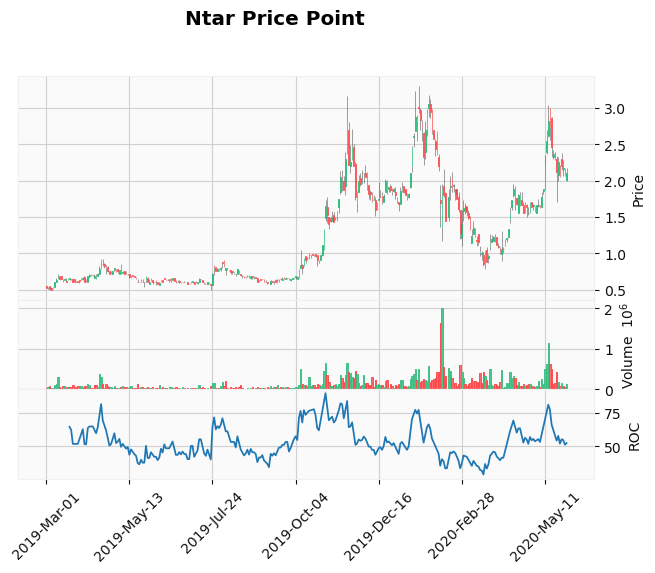

<!DOCTYPE html>

<html>
  <head>
    <meta charset="utf-8" />
<script data-ad-client="ca-pub-2479144310234386" async src="https://pagead2.googlesyndication.com/pagead/js/adsbygoogle.js"></script>
    <meta name="viewport" content="width=device-width, initial-scale=1.0" /><meta name="generator" content="Docutils 0.17.1: http://docutils.sourceforge.net/" />

    <title>&lt;no title&gt; &#8212; Investing Reference Book</title>
    
  <!-- Loaded before other Sphinx assets -->
  <link href="../../_static/styles/theme.css?digest=1999514e3f237ded88cf" rel="stylesheet">
<link href="../../_static/styles/pydata-sphinx-theme.css?digest=1999514e3f237ded88cf" rel="stylesheet">

    
  <link rel="stylesheet"
    href="../../_static/vendor/fontawesome/5.13.0/css/all.min.css">
  <link rel="preload" as="font" type="font/woff2" crossorigin
    href="../../_static/vendor/fontawesome/5.13.0/webfonts/fa-solid-900.woff2">
  <link rel="preload" as="font" type="font/woff2" crossorigin
    href="../../_static/vendor/fontawesome/5.13.0/webfonts/fa-brands-400.woff2">

    <link rel="stylesheet" type="text/css" href="../../_static/pygments.css" />
    <link rel="stylesheet" href="../../_static/styles/sphinx-book-theme.css?digest=62ba249389abaaa9ffc34bf36a076bdc1d65ee18" type="text/css" />
    <link rel="stylesheet" type="text/css" href="../../_static/togglebutton.css" />
    <link rel="stylesheet" type="text/css" href="../../_static/copybutton.css" />
    <link rel="stylesheet" type="text/css" href="../../_static/mystnb.css" />
    <link rel="stylesheet" type="text/css" href="../../_static/sphinx-thebe.css" />
    <link rel="stylesheet" type="text/css" href="../../_static/design-style.b7bb847fb20b106c3d81b95245e65545.min.css" />
    
  <!-- Pre-loaded scripts that we'll load fully later -->
  <link rel="preload" as="script" href="../../_static/scripts/pydata-sphinx-theme.js?digest=1999514e3f237ded88cf">

    <script data-url_root="../../" id="documentation_options" src="../../_static/documentation_options.js"></script>
    <script src="../../_static/jquery.js"></script>
    <script src="../../_static/underscore.js"></script>
    <script src="../../_static/doctools.js"></script>
    <script src="../../_static/clipboard.min.js"></script>
    <script src="../../_static/copybutton.js"></script>
    <script src="../../_static/scripts/sphinx-book-theme.js?digest=f31d14ad54b65d19161ba51d4ffff3a77ae00456"></script>
    <script>let toggleHintShow = 'Click to show';</script>
    <script>let toggleHintHide = 'Click to hide';</script>
    <script>let toggleOpenOnPrint = 'true';</script>
    <script src="../../_static/togglebutton.js"></script>
    <script>var togglebuttonSelector = '.toggle, .admonition.dropdown, .tag_hide_input div.cell_input, .tag_hide-input div.cell_input, .tag_hide_output div.cell_output, .tag_hide-output div.cell_output, .tag_hide_cell.cell, .tag_hide-cell.cell';</script>
    <script src="../../_static/design-tabs.js"></script>
    <script>const THEBE_JS_URL = "https://unpkg.com/thebe@0.8.2/lib/index.js"
const thebe_selector = ".thebe,.cell"
const thebe_selector_input = "pre"
const thebe_selector_output = ".output, .cell_output"
</script>
    <script async="async" src="../../_static/sphinx-thebe.js"></script>
    <link rel="index" title="Index" href="../../genindex.html" />
    <link rel="search" title="Search" href="../../search.html" />
    <meta name="viewport" content="width=device-width, initial-scale=1" />
    <meta name="docsearch:language" content="None">
    

    <!-- Google Analytics -->
    
  </head>
  <body data-spy="scroll" data-target="#bd-toc-nav" data-offset="60">
<!-- Checkboxes to toggle the left sidebar -->
<input type="checkbox" class="sidebar-toggle" name="__navigation" id="__navigation" aria-label="Toggle navigation sidebar">
<label class="overlay overlay-navbar" for="__navigation">
    <div class="visually-hidden">Toggle navigation sidebar</div>
</label>
<!-- Checkboxes to toggle the in-page toc -->
<input type="checkbox" class="sidebar-toggle" name="__page-toc" id="__page-toc" aria-label="Toggle in-page Table of Contents">
<label class="overlay overlay-pagetoc" for="__page-toc">
    <div class="visually-hidden">Toggle in-page Table of Contents</div>
</label>
<!-- Headers at the top -->
<div class="announcement header-item noprint"></div>
<div class="header header-item noprint"></div>

    
    <div class="container-fluid" id="banner"></div>

    

    <div class="container-xl">
      <div class="row">
          
<!-- Sidebar -->
<div class="bd-sidebar noprint" id="site-navigation">
    <div class="bd-sidebar__content">
        <div class="bd-sidebar__top"><div class="navbar-brand-box">
    <a class="navbar-brand text-wrap" href="../../index.html">
      
        <!-- `logo` is deprecated in Sphinx 4.0, so remove this when we stop supporting 3 -->
        
      
      
      
      
      
      <h1 class="site-logo" id="site-title">Investing Reference Book</h1>
      
    </a>
</div><form class="bd-search d-flex align-items-center" action="../../search.html" method="get">
  <i class="icon fas fa-search"></i>
  <input type="search" class="form-control" name="q" id="search-input" placeholder="Search this book..." aria-label="Search this book..." autocomplete="off" >
</form><nav class="bd-links" id="bd-docs-nav" aria-label="Main">
    <div class="bd-toc-item active">
        <p aria-level="2" class="caption" role="heading">
 <span class="caption-text">
  Custom Content
 </span>
</p>
<ul class="nav bd-sidenav">
 <li class="toctree-l1">
  <a class="reference internal" href="../../docs/introduction.html">
   Summary
  </a>
 </li>
 <li class="toctree-l1">
  <a class="reference internal" href="../../docs/ch1_trade_rules_to_live_by.html">
   Rules for Trading
  </a>
 </li>
 <li class="toctree-l1 has-children">
  <a class="reference internal" href="../../docs/ch2_code_4trading.html">
   Code For Trading
  </a>
  <input class="toctree-checkbox" id="toctree-checkbox-1" name="toctree-checkbox-1" type="checkbox"/>
  <label for="toctree-checkbox-1">
   <i class="fas fa-chevron-down">
   </i>
  </label>
  <ul>
   <li class="toctree-l2">
    <a class="reference internal" href="../../docs/code/projects.html">
     Projects
    </a>
   </li>
  </ul>
 </li>
 <li class="toctree-l1">
  <a class="reference internal" href="../../docs/ch4_parameters.html">
   Parameters
  </a>
 </li>
 <li class="toctree-l1 has-children">
  <a class="reference internal" href="../../docs/ch5_afterthoughts.html">
   Afterthoughts
  </a>
  <input class="toctree-checkbox" id="toctree-checkbox-2" name="toctree-checkbox-2" type="checkbox"/>
  <label for="toctree-checkbox-2">
   <i class="fas fa-chevron-down">
   </i>
  </label>
  <ul>
   <li class="toctree-l2">
    <a class="reference internal" href="../../docs/afterthoughts/2020_thoughts.html">
     2020 Thoughts
    </a>
   </li>
   <li class="toctree-l2">
    <a class="reference internal" href="../../docs/afterthoughts/2021_thoughts.html">
     Stock Purchases Thoughts
    </a>
   </li>
   <li class="toctree-l2">
    <a class="reference internal" href="../../docs/afterthoughts/2022_thoughts.html">
     Initial Thoughts
    </a>
   </li>
  </ul>
 </li>
 <li class="toctree-l1 has-children">
  <a class="reference internal" href="../../docs/ch6_predictions.html">
   Predictions
  </a>
  <input class="toctree-checkbox" id="toctree-checkbox-3" name="toctree-checkbox-3" type="checkbox"/>
  <label for="toctree-checkbox-3">
   <i class="fas fa-chevron-down">
   </i>
  </label>
  <ul>
   <li class="toctree-l2">
    <a class="reference internal" href="../../docs/predictions/2020_eoy_predictions.html">
     2020 EOY predictions
    </a>
   </li>
  </ul>
 </li>
 <li class="toctree-l1 has-children">
  <a class="reference internal" href="../references/ReadMe.html">
   Notebooks
  </a>
  <input class="toctree-checkbox" id="toctree-checkbox-4" name="toctree-checkbox-4" type="checkbox"/>
  <label for="toctree-checkbox-4">
   <i class="fas fa-chevron-down">
   </i>
  </label>
  <ul>
   <li class="toctree-l2">
    <a class="reference internal" href="../references/Returns.html">
     Returns
    </a>
   </li>
   <li class="toctree-l2">
    <a class="reference internal" href="../references/WeightsGeneration.html">
     Weights Generation
    </a>
   </li>
   <li class="toctree-l2">
    <a class="reference internal" href="../references/Performance.html">
     Performance
    </a>
   </li>
  </ul>
 </li>
 <li class="toctree-l1">
  <a class="reference internal" href="../../docs/notes_from_courses.html">
   Course Notes
  </a>
 </li>
 <li class="toctree-l1">
  <a class="reference internal" href="../../docs/glossary.html">
   Glossary
  </a>
 </li>
</ul>
<p aria-level="2" class="caption" role="heading">
 <span class="caption-text">
  Legacy Content
 </span>
</p>
<ul class="nav bd-sidenav">
 <li class="toctree-l1">
  <a class="reference internal" href="../../docs/about_py.html">
   About Python
  </a>
 </li>
 <li class="toctree-l1">
  <a class="reference internal" href="../../docs/getting_started.html">
   Setting up Your Python Environment
  </a>
 </li>
 <li class="toctree-l1">
  <a class="reference internal" href="../../docs/python_by_example.html">
   An Introductory Example
  </a>
 </li>
 <li class="toctree-l1">
  <a class="reference internal" href="../../docs/learn_more.html">
   Learn More
  </a>
 </li>
</ul>

    </div>
</nav></div>
        <div class="bd-sidebar__bottom">
             <!-- To handle the deprecated key -->
            
            <div class="navbar_extra_footer">
            Powered by <a href="https://jupyterbook.org">Jupyter Book</a>
            </div>
            
        </div>
    </div>
    <div id="rtd-footer-container"></div>
</div>


          


          
<!-- A tiny helper pixel to detect if we've scrolled -->
<div class="sbt-scroll-pixel-helper"></div>
<!-- Main content -->
<div class="col py-0 content-container">
    
    <div class="header-article row sticky-top noprint">
        


<div class="col py-1 d-flex header-article-main">
    <div class="header-article__left">
        
        <label for="__navigation"
  class="headerbtn"
  data-toggle="tooltip"
data-placement="right"
title="Toggle navigation"
>
  

<span class="headerbtn__icon-container">
  <i class="fas fa-bars"></i>
  </span>

</label>

        
    </div>
    <div class="header-article__right">
<div class="menu-dropdown menu-dropdown-launch-buttons">
  <button class="headerbtn menu-dropdown__trigger"
      aria-label="Launch interactive content">
      <i class="fas fa-rocket"></i>
  </button>
  <div class="menu-dropdown__content">
    <ul>
      <li>
        <a href="https://mybinder.org/v2/gh/dli-invest/iref-book/master?urlpath=lab/tree/ibook/notebooks/analyze/pandas_ta_plots_ip.ipynb"
   class="headerbtn"
   data-toggle="tooltip"
data-placement="left"
title="Launch on Binder"
>
  

<span class="headerbtn__icon-container">
  
    
  </span>
<span class="headerbtn__text-container">Binder</span>
</a>

      </li>
      
      <li>
        <a href="https://colab.research.google.com/github/dli-invest/iref-book/blob/master/ibook/notebooks/analyze/pandas_ta_plots_ip.ipynb"
   class="headerbtn"
   data-toggle="tooltip"
data-placement="left"
title="Launch on Colab"
>
  

<span class="headerbtn__icon-container">
  
    
  </span>
<span class="headerbtn__text-container">Colab</span>
</a>

      </li>
      
    </ul>
  </div>
</div>

<button onclick="toggleFullScreen()"
  class="headerbtn"
  data-toggle="tooltip"
data-placement="bottom"
title="Fullscreen mode"
>
  

<span class="headerbtn__icon-container">
  <i class="fas fa-expand"></i>
  </span>

</button>

<div class="menu-dropdown menu-dropdown-repository-buttons">
  <button class="headerbtn menu-dropdown__trigger"
      aria-label="Source repositories">
      <i class="fab fa-github"></i>
  </button>
  <div class="menu-dropdown__content">
    <ul>
      <li>
        <a href="https://github.com/dli-invest/iref-book"
   class="headerbtn"
   data-toggle="tooltip"
data-placement="left"
title="Source repository"
>
  

<span class="headerbtn__icon-container">
  <i class="fab fa-github"></i>
  </span>
<span class="headerbtn__text-container">repository</span>
</a>

      </li>
      
      <li>
        <a href="https://github.com/dli-invest/iref-book/issues/new?title=Issue%20on%20page%20%2Fnotebooks/analyze/pandas_ta_plots_ip.html&body=Your%20issue%20content%20here."
   class="headerbtn"
   data-toggle="tooltip"
data-placement="left"
title="Open an issue"
>
  

<span class="headerbtn__icon-container">
  <i class="fas fa-lightbulb"></i>
  </span>
<span class="headerbtn__text-container">open issue</span>
</a>

      </li>
      
      <li>
        <a href="https://github.com/dli-invest/iref-book/edit/master/ibook/notebooks/analyze/pandas_ta_plots_ip.ipynb"
   class="headerbtn"
   data-toggle="tooltip"
data-placement="left"
title="Edit this page"
>
  

<span class="headerbtn__icon-container">
  <i class="fas fa-pencil-alt"></i>
  </span>
<span class="headerbtn__text-container">suggest edit</span>
</a>

      </li>
      
    </ul>
  </div>
</div>

<div class="menu-dropdown menu-dropdown-download-buttons">
  <button class="headerbtn menu-dropdown__trigger"
      aria-label="Download this page">
      <i class="fas fa-download"></i>
  </button>
  <div class="menu-dropdown__content">
    <ul>
      <li>
        <a href="../../_sources/notebooks/analyze/pandas_ta_plots_ip.ipynb"
   class="headerbtn"
   data-toggle="tooltip"
data-placement="left"
title="Download source file"
>
  

<span class="headerbtn__icon-container">
  <i class="fas fa-file"></i>
  </span>
<span class="headerbtn__text-container">.ipynb</span>
</a>

      </li>
      
      <li>
        
<button onclick="printPdf(this)"
  class="headerbtn"
  data-toggle="tooltip"
data-placement="left"
title="Print to PDF"
>
  

<span class="headerbtn__icon-container">
  <i class="fas fa-file-pdf"></i>
  </span>
<span class="headerbtn__text-container">.pdf</span>
</button>

      </li>
      
    </ul>
  </div>
</div>
<label for="__page-toc"
  class="headerbtn headerbtn-page-toc"
  
>
  

<span class="headerbtn__icon-container">
  <i class="fas fa-list"></i>
  </span>

</label>

    </div>
</div>

<!-- Table of contents -->
<div class="col-md-3 bd-toc show noprint">
    <div class="tocsection onthispage pt-5 pb-3">
        <i class="fas fa-list"></i> Contents
    </div>
    <nav id="bd-toc-nav" aria-label="Page">
        <ul class="simple visible nav section-nav flex-column">
</ul>

    </nav>
</div>
    </div>
    <div class="article row">
        <div class="col pl-md-3 pl-lg-5 content-container">
            <!-- Table of contents that is only displayed when printing the page -->
            <div id="jb-print-docs-body" class="onlyprint">
                <h1><no title></h1>
                <!-- Table of contents -->
                <div id="print-main-content">
                    <div id="jb-print-toc">
                        
                        <div>
                            <h2> Contents </h2>
                        </div>
                        <nav aria-label="Page">
                            <ul class="simple visible nav section-nav flex-column">
</ul>

                        </nav>
                    </div>
                </div>
            </div>
            <main id="main-content" role="main">
                
              <div>
                
  <p><a href="https://colab.research.google.com/github/dli-invest/dli-invest.github.io/blob/master/ibook/notebooks/analyze/pandas_ta_plots_ip.ipynb" target="_parent"></a></p>
<div class="cell docutils container">
<div class="cell_input docutils container">
<div class="highlight-ipython3 notranslate"><div class="highlight"><pre><span></span><span class="o">!</span>pip install mplfinance yfinance
<span class="o">!</span>pip install -U git+https://github.com/twopirllc/pandas-ta
</pre></div>
</div>
</div>
<div class="cell_output docutils container">
<div class="output stream highlight-myst-ansi notranslate"><div class="highlight"><pre><span></span>Requirement already satisfied: mplfinance in /usr/share/miniconda3/envs/investing_book/lib/python3.7/site-packages (0.12.9b1)
Requirement already satisfied: yfinance in /usr/share/miniconda3/envs/investing_book/lib/python3.7/site-packages (0.1.74)
</pre></div>
</div>
<div class="output stream highlight-myst-ansi notranslate"><div class="highlight"><pre><span></span>Requirement already satisfied: pandas in /usr/share/miniconda3/envs/investing_book/lib/python3.7/site-packages (from mplfinance) (1.0.4)
Requirement already satisfied: matplotlib in /usr/share/miniconda3/envs/investing_book/lib/python3.7/site-packages (from mplfinance) (3.2.1)
Requirement already satisfied: multitasking&gt;=0.0.7 in /usr/share/miniconda3/envs/investing_book/lib/python3.7/site-packages (from yfinance) (0.0.11)
Requirement already satisfied: numpy&gt;=1.15 in /usr/share/miniconda3/envs/investing_book/lib/python3.7/site-packages (from yfinance) (1.21.5)
Requirement already satisfied: lxml&gt;=4.5.1 in /usr/share/miniconda3/envs/investing_book/lib/python3.7/site-packages (from yfinance) (4.9.1)
Requirement already satisfied: requests&gt;=2.26 in /usr/share/miniconda3/envs/investing_book/lib/python3.7/site-packages (from yfinance) (2.28.0)
Requirement already satisfied: pytz&gt;=2017.2 in /usr/share/miniconda3/envs/investing_book/lib/python3.7/site-packages (from pandas-&gt;mplfinance) (2022.1)
Requirement already satisfied: python-dateutil&gt;=2.6.1 in /usr/share/miniconda3/envs/investing_book/lib/python3.7/site-packages (from pandas-&gt;mplfinance) (2.8.2)
Requirement already satisfied: urllib3&lt;1.27,&gt;=1.21.1 in /usr/share/miniconda3/envs/investing_book/lib/python3.7/site-packages (from requests&gt;=2.26-&gt;yfinance) (1.26.9)
Requirement already satisfied: idna&lt;4,&gt;=2.5 in /usr/share/miniconda3/envs/investing_book/lib/python3.7/site-packages (from requests&gt;=2.26-&gt;yfinance) (3.3)
Requirement already satisfied: charset-normalizer~=2.0.0 in /usr/share/miniconda3/envs/investing_book/lib/python3.7/site-packages (from requests&gt;=2.26-&gt;yfinance) (2.0.4)
Requirement already satisfied: certifi&gt;=2017.4.17 in /usr/share/miniconda3/envs/investing_book/lib/python3.7/site-packages (from requests&gt;=2.26-&gt;yfinance) (2022.6.15)
Requirement already satisfied: pyparsing!=2.0.4,!=2.1.2,!=2.1.6,&gt;=2.0.1 in /usr/share/miniconda3/envs/investing_book/lib/python3.7/site-packages (from matplotlib-&gt;mplfinance) (3.0.4)
Requirement already satisfied: cycler&gt;=0.10 in /usr/share/miniconda3/envs/investing_book/lib/python3.7/site-packages (from matplotlib-&gt;mplfinance) (0.11.0)
Requirement already satisfied: kiwisolver&gt;=1.0.1 in /usr/share/miniconda3/envs/investing_book/lib/python3.7/site-packages (from matplotlib-&gt;mplfinance) (1.4.2)
Requirement already satisfied: typing-extensions in /usr/share/miniconda3/envs/investing_book/lib/python3.7/site-packages (from kiwisolver&gt;=1.0.1-&gt;matplotlib-&gt;mplfinance) (4.1.1)
Requirement already satisfied: six&gt;=1.5 in /usr/share/miniconda3/envs/investing_book/lib/python3.7/site-packages (from python-dateutil&gt;=2.6.1-&gt;pandas-&gt;mplfinance) (1.16.0)
</pre></div>
</div>
<div class="output stream highlight-myst-ansi notranslate"><div class="highlight"><pre><span></span>Collecting git+https://github.com/twopirllc/pandas-ta
  Cloning https://github.com/twopirllc/pandas-ta to /tmp/pip-req-build-w016e1cj
  Running command git clone --filter=blob:none --quiet https://github.com/twopirllc/pandas-ta /tmp/pip-req-build-w016e1cj
</pre></div>
</div>
<div class="output stream highlight-myst-ansi notranslate"><div class="highlight"><pre><span></span>  Resolved https://github.com/twopirllc/pandas-ta to commit 2a24fdc1b69110332db39eda9723a628f75eaf7a
</pre></div>
</div>
<div class="output stream highlight-myst-ansi notranslate"><div class="highlight"><pre><span></span>  Preparing metadata (setup.py) ... ?25l-
</pre></div>
</div>
<div class="output stream highlight-myst-ansi notranslate"><div class="highlight"><pre><span></span> \
</pre></div>
</div>
<div class="output stream highlight-myst-ansi notranslate"><div class="highlight"><pre><span></span> |
</pre></div>
</div>
<div class="output stream highlight-myst-ansi notranslate"><div class="highlight"><pre><span></span> done
?25hRequirement already satisfied: pandas in /usr/share/miniconda3/envs/investing_book/lib/python3.7/site-packages (from pandas-ta==0.3.14b0) (1.0.4)
Requirement already satisfied: python-dateutil&gt;=2.6.1 in /usr/share/miniconda3/envs/investing_book/lib/python3.7/site-packages (from pandas-&gt;pandas-ta==0.3.14b0) (2.8.2)
Requirement already satisfied: numpy&gt;=1.13.3 in /usr/share/miniconda3/envs/investing_book/lib/python3.7/site-packages (from pandas-&gt;pandas-ta==0.3.14b0) (1.21.5)
Requirement already satisfied: pytz&gt;=2017.2 in /usr/share/miniconda3/envs/investing_book/lib/python3.7/site-packages (from pandas-&gt;pandas-ta==0.3.14b0) (2022.1)
Requirement already satisfied: six&gt;=1.5 in /usr/share/miniconda3/envs/investing_book/lib/python3.7/site-packages (from python-dateutil&gt;=2.6.1-&gt;pandas-&gt;pandas-ta==0.3.14b0) (1.16.0)
Building wheels for collected packages: pandas-ta
</pre></div>
</div>
<div class="output stream highlight-myst-ansi notranslate"><div class="highlight"><pre><span></span>  Building wheel for pandas-ta (setup.py) ... ?25l-
</pre></div>
</div>
<div class="output stream highlight-myst-ansi notranslate"><div class="highlight"><pre><span></span> \
</pre></div>
</div>
<div class="output stream highlight-myst-ansi notranslate"><div class="highlight"><pre><span></span> |
</pre></div>
</div>
<div class="output stream highlight-myst-ansi notranslate"><div class="highlight"><pre><span></span> /
</pre></div>
</div>
<div class="output stream highlight-myst-ansi notranslate"><div class="highlight"><pre><span></span> -
</pre></div>
</div>
<div class="output stream highlight-myst-ansi notranslate"><div class="highlight"><pre><span></span> \
</pre></div>
</div>
<div class="output stream highlight-myst-ansi notranslate"><div class="highlight"><pre><span></span> |
</pre></div>
</div>
<div class="output stream highlight-myst-ansi notranslate"><div class="highlight"><pre><span></span> done
?25h  Created wheel for pandas-ta: filename=pandas_ta-0.3.14b0-py3-none-any.whl size=219766 sha256=13445fc8d82fd49247d50d6e5cd5d0579f378c82ba5358e3227a31fc9fa819ed
  Stored in directory: /tmp/pip-ephem-wheel-cache-z4wdb9p9/wheels/2d/b0/97/98814700c6859229dac6f4c0b1bc1546331add62e7f6c9bf15
Successfully built pandas-ta
</pre></div>
</div>
<div class="output stream highlight-myst-ansi notranslate"><div class="highlight"><pre><span></span>Installing collected packages: pandas-ta
</pre></div>
</div>
<div class="output stream highlight-myst-ansi notranslate"><div class="highlight"><pre><span></span>Successfully installed pandas-ta-0.3.14b0
</pre></div>
</div>
</div>
</div>
<div class="cell docutils container">
<div class="cell_input docutils container">
<div class="highlight-ipython3 notranslate"><div class="highlight"><pre><span></span><span class="o">%</span><span class="k">matplotlib</span> inline
<span class="kn">import</span> <span class="nn">datetime</span> <span class="k">as</span> <span class="nn">dt</span>
<span class="kn">import</span> <span class="nn">random</span> <span class="k">as</span> <span class="nn">rnd</span>

<span class="kn">import</span> <span class="nn">numpy</span> <span class="k">as</span> <span class="nn">np</span>
<span class="kn">import</span> <span class="nn">pandas</span> <span class="k">as</span> <span class="nn">pd</span>
<span class="kn">import</span> <span class="nn">mplfinance</span> <span class="k">as</span> <span class="nn">mpf</span>
<span class="kn">import</span> <span class="nn">pandas_ta</span> <span class="k">as</span> <span class="nn">ta</span>
<span class="kn">import</span> <span class="nn">yfinance</span> <span class="k">as</span> <span class="nn">yf</span>
</pre></div>
</div>
</div>
</div>
<div class="cell docutils container">
<div class="cell_input docutils container">
<div class="highlight-ipython3 notranslate"><div class="highlight"><pre><span></span><span class="k">class</span> <span class="nc">Chart</span><span class="p">(</span><span class="nb">object</span><span class="p">):</span>
    <span class="k">def</span> <span class="fm">__init__</span><span class="p">(</span><span class="bp">self</span><span class="p">,</span> <span class="n">df</span><span class="p">:</span> <span class="n">pd</span><span class="o">.</span><span class="n">DataFrame</span> <span class="o">=</span> <span class="kc">None</span><span class="p">,</span> <span class="n">strategy</span><span class="p">:</span> <span class="n">ta</span><span class="o">.</span><span class="n">Strategy</span> <span class="o">=</span> <span class="n">ta</span><span class="o">.</span><span class="n">CommonStrategy</span><span class="p">,</span> <span class="o">*</span><span class="n">args</span><span class="p">,</span> <span class="o">**</span><span class="n">kwargs</span><span class="p">):</span>
        <span class="bp">self</span><span class="o">.</span><span class="n">verbose</span> <span class="o">=</span> <span class="n">kwargs</span><span class="o">.</span><span class="n">pop</span><span class="p">(</span><span class="s2">&quot;verbose&quot;</span><span class="p">,</span> <span class="kc">False</span><span class="p">)</span>

        <span class="k">if</span> <span class="nb">isinstance</span><span class="p">(</span><span class="n">df</span><span class="p">,</span> <span class="n">pd</span><span class="o">.</span><span class="n">DataFrame</span><span class="p">)</span> <span class="ow">and</span> <span class="n">df</span><span class="o">.</span><span class="n">ta</span><span class="o">.</span><span class="n">datetime_ordered</span><span class="p">:</span>
            <span class="bp">self</span><span class="o">.</span><span class="n">df</span> <span class="o">=</span> <span class="n">df</span>
            <span class="k">if</span> <span class="bp">self</span><span class="o">.</span><span class="n">df</span><span class="o">.</span><span class="n">name</span> <span class="ow">is</span> <span class="ow">not</span> <span class="kc">None</span> <span class="ow">and</span> <span class="bp">self</span><span class="o">.</span><span class="n">df</span><span class="o">.</span><span class="n">name</span> <span class="o">!=</span> <span class="s2">&quot;&quot;</span><span class="p">:</span>
                <span class="n">df_name</span> <span class="o">=</span> <span class="nb">str</span><span class="p">(</span><span class="bp">self</span><span class="o">.</span><span class="n">df</span><span class="o">.</span><span class="n">name</span><span class="p">)</span>
            <span class="k">else</span><span class="p">:</span>
                <span class="n">df_name</span> <span class="o">=</span> <span class="s2">&quot;DataFrame&quot;</span>
            <span class="k">if</span> <span class="bp">self</span><span class="o">.</span><span class="n">verbose</span><span class="p">:</span> <span class="nb">print</span><span class="p">(</span><span class="sa">f</span><span class="s2">&quot;[i] Loaded </span><span class="si">{</span><span class="n">df_name</span><span class="si">}{</span><span class="bp">self</span><span class="o">.</span><span class="n">df</span><span class="o">.</span><span class="n">shape</span><span class="si">}</span><span class="s2">&quot;</span><span class="p">)</span>
        <span class="k">else</span><span class="p">:</span>
            <span class="nb">print</span><span class="p">(</span><span class="sa">f</span><span class="s2">&quot;[X] Oops! Missing &#39;ohlcv&#39; data or index is not datetime ordered.</span><span class="se">\n</span><span class="s2">&quot;</span><span class="p">)</span>
            <span class="k">return</span> <span class="kc">None</span>

        <span class="bp">self</span><span class="o">.</span><span class="n">_validate_ta_strategy</span><span class="p">(</span><span class="n">strategy</span><span class="p">)</span>
        <span class="bp">self</span><span class="o">.</span><span class="n">_validate_mpf_kwargs</span><span class="p">(</span><span class="o">**</span><span class="n">kwargs</span><span class="p">)</span>
        <span class="bp">self</span><span class="o">.</span><span class="n">_validate_chart_kwargs</span><span class="p">(</span><span class="o">**</span><span class="n">kwargs</span><span class="p">)</span>

        <span class="c1"># Build TA and Plot</span>
        <span class="bp">self</span><span class="o">.</span><span class="n">df</span><span class="o">.</span><span class="n">ta</span><span class="o">.</span><span class="n">strategy</span><span class="p">(</span><span class="bp">self</span><span class="o">.</span><span class="n">strategy</span><span class="p">,</span> <span class="n">verbose</span><span class="o">=</span><span class="bp">self</span><span class="o">.</span><span class="n">verbose</span><span class="p">)</span>
        <span class="bp">self</span><span class="o">.</span><span class="n">_plot</span><span class="p">(</span><span class="o">**</span><span class="n">kwargs</span><span class="p">)</span>

    <span class="k">def</span> <span class="nf">_validate_ta_strategy</span><span class="p">(</span><span class="bp">self</span><span class="p">,</span> <span class="n">strategy</span><span class="p">):</span>
        <span class="k">if</span> <span class="n">strategy</span> <span class="ow">is</span> <span class="ow">not</span> <span class="kc">None</span> <span class="ow">or</span> <span class="nb">isinstance</span><span class="p">(</span><span class="n">strategy</span><span class="p">,</span> <span class="n">ta</span><span class="o">.</span><span class="n">Strategy</span><span class="p">):</span>
            <span class="bp">self</span><span class="o">.</span><span class="n">strategy</span> <span class="o">=</span> <span class="n">strategy</span>
        <span class="k">elif</span> <span class="nb">len</span><span class="p">(</span><span class="bp">self</span><span class="o">.</span><span class="n">strategy_ta</span><span class="p">)</span> <span class="o">&gt;</span> <span class="mi">0</span><span class="p">:</span>
            <span class="nb">print</span><span class="p">(</span><span class="sa">f</span><span class="s2">&quot;[+] Strategy: </span><span class="si">{</span><span class="bp">self</span><span class="o">.</span><span class="n">strategy_name</span><span class="si">}</span><span class="s2">&quot;</span><span class="p">)</span>
        <span class="k">else</span><span class="p">:</span>
            <span class="bp">self</span><span class="o">.</span><span class="n">strategy</span> <span class="o">=</span> <span class="n">ta</span><span class="o">.</span><span class="n">CommonStrategy</span>        

    <span class="k">def</span> <span class="nf">_validate_chart_kwargs</span><span class="p">(</span><span class="bp">self</span><span class="p">,</span> <span class="o">**</span><span class="n">kwargs</span><span class="p">):</span>
        <span class="sd">&quot;&quot;&quot;Chart Settings&quot;&quot;&quot;</span>
        <span class="bp">self</span><span class="o">.</span><span class="n">config</span> <span class="o">=</span> <span class="p">{}</span>
        <span class="bp">self</span><span class="o">.</span><span class="n">config</span><span class="p">[</span><span class="s2">&quot;last&quot;</span><span class="p">]</span> <span class="o">=</span> <span class="n">kwargs</span><span class="o">.</span><span class="n">pop</span><span class="p">(</span><span class="s2">&quot;last&quot;</span><span class="p">,</span> <span class="n">recent_bars</span><span class="p">(</span><span class="bp">self</span><span class="o">.</span><span class="n">df</span><span class="p">))</span>
        <span class="bp">self</span><span class="o">.</span><span class="n">config</span><span class="p">[</span><span class="s2">&quot;rpad&quot;</span><span class="p">]</span> <span class="o">=</span> <span class="n">kwargs</span><span class="o">.</span><span class="n">pop</span><span class="p">(</span><span class="s2">&quot;rpad&quot;</span><span class="p">,</span> <span class="mi">10</span><span class="p">)</span>
        <span class="bp">self</span><span class="o">.</span><span class="n">config</span><span class="p">[</span><span class="s2">&quot;title&quot;</span><span class="p">]</span> <span class="o">=</span> <span class="n">kwargs</span><span class="o">.</span><span class="n">pop</span><span class="p">(</span><span class="s2">&quot;title&quot;</span><span class="p">,</span> <span class="s2">&quot;Asset&quot;</span><span class="p">)</span>
        <span class="bp">self</span><span class="o">.</span><span class="n">config</span><span class="p">[</span><span class="s2">&quot;volume&quot;</span><span class="p">]</span> <span class="o">=</span> <span class="n">kwargs</span><span class="o">.</span><span class="n">pop</span><span class="p">(</span><span class="s2">&quot;volume&quot;</span><span class="p">,</span> <span class="kc">True</span><span class="p">)</span>

    <span class="k">def</span> <span class="nf">_validate_mpf_kwargs</span><span class="p">(</span><span class="bp">self</span><span class="p">,</span> <span class="o">**</span><span class="n">kwargs</span><span class="p">):</span>
        <span class="c1"># mpf global chart settings</span>
        <span class="n">default_chart</span> <span class="o">=</span> <span class="n">mpf</span><span class="o">.</span><span class="n">available_styles</span><span class="p">()[</span><span class="o">-</span><span class="mi">1</span><span class="p">]</span>
        <span class="n">default_mpf_width</span> <span class="o">=</span> <span class="p">{</span>
            <span class="s1">&#39;candle_linewidth&#39;</span><span class="p">:</span> <span class="mf">0.6</span><span class="p">,</span>
            <span class="s1">&#39;candle_width&#39;</span><span class="p">:</span> <span class="mf">0.525</span><span class="p">,</span>
            <span class="s1">&#39;volume_width&#39;</span><span class="p">:</span> <span class="mf">0.525</span>
        <span class="p">}</span>
        <span class="n">mpfchart</span> <span class="o">=</span> <span class="p">{}</span>

        <span class="n">mpf_style</span> <span class="o">=</span> <span class="n">kwargs</span><span class="o">.</span><span class="n">pop</span><span class="p">(</span><span class="s2">&quot;style&quot;</span><span class="p">,</span> <span class="s2">&quot;&quot;</span><span class="p">)</span>
        <span class="k">if</span> <span class="n">mpf_style</span> <span class="o">==</span> <span class="s2">&quot;&quot;</span> <span class="ow">or</span> <span class="n">mpf_style</span><span class="o">.</span><span class="n">lower</span><span class="p">()</span> <span class="o">==</span> <span class="s2">&quot;random&quot;</span><span class="p">:</span>
            <span class="n">mpf_styles</span> <span class="o">=</span> <span class="n">mpf</span><span class="o">.</span><span class="n">available_styles</span><span class="p">()</span>
            <span class="n">mpfchart</span><span class="p">[</span><span class="s2">&quot;style&quot;</span><span class="p">]</span> <span class="o">=</span> <span class="n">mpf_styles</span><span class="p">[</span><span class="n">rnd</span><span class="o">.</span><span class="n">randrange</span><span class="p">(</span><span class="nb">len</span><span class="p">(</span><span class="n">mpf_styles</span><span class="p">))]</span>
        <span class="k">elif</span> <span class="n">mpf_style</span><span class="o">.</span><span class="n">lower</span><span class="p">()</span> <span class="ow">in</span> <span class="n">mpf</span><span class="o">.</span><span class="n">available_styles</span><span class="p">():</span>
            <span class="n">mpfchart</span><span class="p">[</span><span class="s2">&quot;style&quot;</span><span class="p">]</span> <span class="o">=</span> <span class="n">mpf_style</span>

        <span class="n">mpfchart</span><span class="p">[</span><span class="s2">&quot;figsize&quot;</span><span class="p">]</span> <span class="o">=</span> <span class="n">kwargs</span><span class="o">.</span><span class="n">pop</span><span class="p">(</span><span class="s2">&quot;figsize&quot;</span><span class="p">,</span> <span class="p">(</span><span class="mi">12</span><span class="p">,</span> <span class="mi">10</span><span class="p">))</span>
        <span class="n">mpfchart</span><span class="p">[</span><span class="s2">&quot;non_trading&quot;</span><span class="p">]</span> <span class="o">=</span> <span class="n">kwargs</span><span class="o">.</span><span class="n">pop</span><span class="p">(</span><span class="s2">&quot;nontrading&quot;</span><span class="p">,</span> <span class="kc">False</span><span class="p">)</span>
        <span class="n">mpfchart</span><span class="p">[</span><span class="s2">&quot;rc&quot;</span><span class="p">]</span> <span class="o">=</span> <span class="n">kwargs</span><span class="o">.</span><span class="n">pop</span><span class="p">(</span><span class="s2">&quot;rc&quot;</span><span class="p">,</span> <span class="p">{</span><span class="s1">&#39;figure.facecolor&#39;</span><span class="p">:</span> <span class="s1">&#39;#EDEDED&#39;</span><span class="p">})</span>
        <span class="n">mpfchart</span><span class="p">[</span><span class="s2">&quot;plot_ratios&quot;</span><span class="p">]</span> <span class="o">=</span> <span class="n">kwargs</span><span class="o">.</span><span class="n">pop</span><span class="p">(</span><span class="s2">&quot;plot_ratios&quot;</span><span class="p">,</span> <span class="p">(</span><span class="mi">12</span><span class="p">,</span> <span class="mf">1.7</span><span class="p">))</span>
        <span class="n">mpfchart</span><span class="p">[</span><span class="s2">&quot;scale_padding&quot;</span><span class="p">]</span> <span class="o">=</span> <span class="n">kwargs</span><span class="o">.</span><span class="n">pop</span><span class="p">(</span><span class="s2">&quot;scale_padding&quot;</span><span class="p">,</span> <span class="p">{</span><span class="s1">&#39;left&#39;</span><span class="p">:</span> <span class="mi">1</span><span class="p">,</span> <span class="s1">&#39;top&#39;</span><span class="p">:</span> <span class="mi">4</span><span class="p">,</span> <span class="s1">&#39;right&#39;</span><span class="p">:</span> <span class="mi">1</span><span class="p">,</span> <span class="s1">&#39;bottom&#39;</span><span class="p">:</span> <span class="mi">1</span><span class="p">})</span>
        <span class="n">mpfchart</span><span class="p">[</span><span class="s2">&quot;tight_layout&quot;</span><span class="p">]</span> <span class="o">=</span> <span class="n">kwargs</span><span class="o">.</span><span class="n">pop</span><span class="p">(</span><span class="s2">&quot;tight_layout&quot;</span><span class="p">,</span> <span class="kc">True</span><span class="p">)</span>
        <span class="n">mpfchart</span><span class="p">[</span><span class="s2">&quot;type&quot;</span><span class="p">]</span> <span class="o">=</span> <span class="n">kwargs</span><span class="o">.</span><span class="n">pop</span><span class="p">(</span><span class="s2">&quot;type&quot;</span><span class="p">,</span> <span class="s2">&quot;candle&quot;</span><span class="p">)</span>
        <span class="n">mpfchart</span><span class="p">[</span><span class="s2">&quot;width_config&quot;</span><span class="p">]</span> <span class="o">=</span> <span class="n">kwargs</span><span class="o">.</span><span class="n">pop</span><span class="p">(</span><span class="s2">&quot;width_config&quot;</span><span class="p">,</span> <span class="n">default_mpf_width</span><span class="p">)</span>
        <span class="n">mpfchart</span><span class="p">[</span><span class="s2">&quot;xrotation&quot;</span><span class="p">]</span> <span class="o">=</span> <span class="n">kwargs</span><span class="o">.</span><span class="n">pop</span><span class="p">(</span><span class="s2">&quot;xrotation&quot;</span><span class="p">,</span> <span class="mi">15</span><span class="p">)</span>
        
        <span class="bp">self</span><span class="o">.</span><span class="n">mpfchart</span> <span class="o">=</span> <span class="n">mpfchart</span>

    <span class="k">def</span> <span class="nf">_attribution</span><span class="p">(</span><span class="bp">self</span><span class="p">):</span>
        <span class="nb">print</span><span class="p">(</span><span class="sa">f</span><span class="s2">&quot;</span><span class="se">\n</span><span class="s2">Pandas v: </span><span class="si">{</span><span class="n">pd</span><span class="o">.</span><span class="n">__version__</span><span class="si">}</span><span class="s2"> [pip install pandas] https://github.com/pandas-dev/pandas&quot;</span><span class="p">)</span>
        <span class="nb">print</span><span class="p">(</span><span class="sa">f</span><span class="s2">&quot;Data from Yahoo Finance v: 1.0.19 [pip install yfinance]&quot;</span><span class="p">)</span>
        <span class="nb">print</span><span class="p">(</span><span class="sa">f</span><span class="s2">&quot;Technical Analysis with Pandas TA v: </span><span class="si">{</span><span class="n">ta</span><span class="o">.</span><span class="n">version</span><span class="si">}</span><span class="s2"> [pip install pandas_ta] https://github.com/twopirllc/pandas-ta&quot;</span><span class="p">)</span>
        <span class="nb">print</span><span class="p">(</span><span class="sa">f</span><span class="s2">&quot;Charts by Matplotlib Finance v: </span><span class="si">{</span><span class="n">mpf</span><span class="o">.</span><span class="n">__version__</span><span class="si">}</span><span class="s2"> [pip install mplfinance] https://github.com/matplotlib/mplfinance</span><span class="se">\n</span><span class="s2">&quot;</span><span class="p">)</span>

    <span class="k">def</span> <span class="nf">_right_pad_df</span><span class="p">(</span><span class="bp">self</span><span class="p">,</span> <span class="n">rpad</span><span class="p">:</span> <span class="nb">int</span><span class="p">,</span> <span class="n">delta_unit</span><span class="p">:</span> <span class="nb">str</span> <span class="o">=</span> <span class="s2">&quot;D&quot;</span><span class="p">,</span> <span class="n">range_freq</span><span class="p">:</span> <span class="nb">str</span> <span class="o">=</span> <span class="s2">&quot;B&quot;</span><span class="p">):</span>
        <span class="k">if</span> <span class="n">rpad</span> <span class="o">&gt;</span> <span class="mi">0</span><span class="p">:</span>
            <span class="n">dfpad</span> <span class="o">=</span> <span class="bp">self</span><span class="o">.</span><span class="n">df</span><span class="p">[</span><span class="o">-</span><span class="n">rpad</span><span class="p">:]</span><span class="o">.</span><span class="n">copy</span><span class="p">()</span>
            <span class="n">dfpad</span><span class="o">.</span><span class="n">iloc</span><span class="p">[:,:]</span> <span class="o">=</span> <span class="n">np</span><span class="o">.</span><span class="n">NaN</span>

            <span class="n">df_frequency</span> <span class="o">=</span> <span class="bp">self</span><span class="o">.</span><span class="n">df</span><span class="o">.</span><span class="n">index</span><span class="o">.</span><span class="n">value_counts</span><span class="p">()</span><span class="o">.</span><span class="n">mode</span><span class="p">()[</span><span class="mi">0</span><span class="p">]</span> <span class="c1"># Most common frequency</span>
            <span class="n">freq_delta</span> <span class="o">=</span> <span class="n">pd</span><span class="o">.</span><span class="n">Timedelta</span><span class="p">(</span><span class="n">df_frequency</span><span class="p">,</span> <span class="n">unit</span><span class="o">=</span><span class="n">delta_unit</span><span class="p">)</span>
            <span class="n">new_dr</span> <span class="o">=</span> <span class="n">pd</span><span class="o">.</span><span class="n">date_range</span><span class="p">(</span><span class="n">start</span><span class="o">=</span><span class="bp">self</span><span class="o">.</span><span class="n">df</span><span class="o">.</span><span class="n">index</span><span class="p">[</span><span class="o">-</span><span class="mi">1</span><span class="p">]</span> <span class="o">+</span> <span class="n">freq_delta</span><span class="p">,</span> <span class="n">periods</span><span class="o">=</span><span class="n">rpad</span><span class="p">,</span> <span class="n">freq</span><span class="o">=</span><span class="n">range_freq</span><span class="p">)</span>
            <span class="n">dfpad</span><span class="o">.</span><span class="n">index</span> <span class="o">=</span> <span class="n">new_dr</span> <span class="c1"># Update the padded index with new dates</span>
            <span class="bp">self</span><span class="o">.</span><span class="n">df</span> <span class="o">=</span> <span class="bp">self</span><span class="o">.</span><span class="n">df</span><span class="o">.</span><span class="n">append</span><span class="p">(</span><span class="n">dfpad</span><span class="p">)</span>
        
            
    <span class="k">def</span> <span class="nf">_plot</span><span class="p">(</span><span class="bp">self</span><span class="p">,</span> <span class="o">**</span><span class="n">kwargs</span><span class="p">):</span>
        <span class="k">if</span> <span class="ow">not</span> <span class="nb">isinstance</span><span class="p">(</span><span class="bp">self</span><span class="o">.</span><span class="n">mpfchart</span><span class="p">[</span><span class="s2">&quot;plot_ratios&quot;</span><span class="p">],</span> <span class="nb">tuple</span><span class="p">):</span>
            <span class="nb">print</span><span class="p">(</span><span class="sa">f</span><span class="s2">&quot;[X] plot_ratios must be a tuple&quot;</span><span class="p">)</span>
            <span class="k">return</span>

        <span class="c1"># Override Chart Title Option</span>
        <span class="n">chart_title</span> <span class="o">=</span> <span class="bp">self</span><span class="o">.</span><span class="n">config</span><span class="p">[</span><span class="s2">&quot;title&quot;</span><span class="p">]</span>
        <span class="k">if</span> <span class="s2">&quot;title&quot;</span> <span class="ow">in</span> <span class="n">kwargs</span> <span class="ow">and</span> <span class="nb">isinstance</span><span class="p">(</span><span class="n">kwargs</span><span class="p">[</span><span class="s2">&quot;title&quot;</span><span class="p">],</span> <span class="nb">str</span><span class="p">):</span>
            <span class="n">chart_title</span> <span class="o">=</span> <span class="n">kwargs</span><span class="o">.</span><span class="n">pop</span><span class="p">(</span><span class="s2">&quot;title&quot;</span><span class="p">)</span>

        <span class="c1"># Override Right Bar Padding Option</span>
        <span class="n">rpad</span> <span class="o">=</span> <span class="bp">self</span><span class="o">.</span><span class="n">config</span><span class="p">[</span><span class="s2">&quot;rpad&quot;</span><span class="p">]</span>
        <span class="k">if</span> <span class="s2">&quot;rpad&quot;</span> <span class="ow">in</span> <span class="n">kwargs</span> <span class="ow">and</span> <span class="n">kwargs</span><span class="p">[</span><span class="s2">&quot;rpad&quot;</span><span class="p">]</span> <span class="o">&gt;</span> <span class="mi">0</span><span class="p">:</span>
            <span class="n">rpad</span> <span class="o">=</span> <span class="nb">int</span><span class="p">(</span><span class="n">kwargs</span><span class="p">[</span><span class="s2">&quot;rpad&quot;</span><span class="p">])</span>

        <span class="k">def</span> <span class="nf">cpanel</span><span class="p">():</span>
            <span class="k">return</span> <span class="nb">len</span><span class="p">(</span><span class="bp">self</span><span class="o">.</span><span class="n">mpfchart</span><span class="p">[</span><span class="s1">&#39;plot_ratios&#39;</span><span class="p">])</span>

        <span class="c1"># Last Second Default TA Indicators</span>
        <span class="n">linreg</span> <span class="o">=</span> <span class="n">kwargs</span><span class="o">.</span><span class="n">pop</span><span class="p">(</span><span class="s2">&quot;linreg&quot;</span><span class="p">,</span> <span class="kc">False</span><span class="p">)</span>
        <span class="n">linreg_name</span> <span class="o">=</span> <span class="bp">self</span><span class="o">.</span><span class="n">df</span><span class="o">.</span><span class="n">ta</span><span class="o">.</span><span class="n">linreg</span><span class="p">(</span><span class="n">append</span><span class="o">=</span><span class="kc">True</span><span class="p">)</span><span class="o">.</span><span class="n">name</span> <span class="k">if</span> <span class="n">linreg</span> <span class="k">else</span> <span class="s2">&quot;&quot;</span>

        <span class="n">midpoint</span> <span class="o">=</span> <span class="n">kwargs</span><span class="o">.</span><span class="n">pop</span><span class="p">(</span><span class="s2">&quot;midpoint&quot;</span><span class="p">,</span> <span class="kc">False</span><span class="p">)</span>
        <span class="n">midpoint_name</span> <span class="o">=</span> <span class="bp">self</span><span class="o">.</span><span class="n">df</span><span class="o">.</span><span class="n">ta</span><span class="o">.</span><span class="n">midpoint</span><span class="p">(</span><span class="n">append</span><span class="o">=</span><span class="kc">True</span><span class="p">)</span><span class="o">.</span><span class="n">name</span> <span class="k">if</span> <span class="n">midpoint</span> <span class="k">else</span> <span class="s2">&quot;&quot;</span>

        <span class="n">ohlc4</span> <span class="o">=</span> <span class="n">kwargs</span><span class="o">.</span><span class="n">pop</span><span class="p">(</span><span class="s2">&quot;ohlc4&quot;</span><span class="p">,</span> <span class="kc">False</span><span class="p">)</span>
        <span class="n">ohlc4_name</span> <span class="o">=</span> <span class="bp">self</span><span class="o">.</span><span class="n">df</span><span class="o">.</span><span class="n">ta</span><span class="o">.</span><span class="n">ohlc4</span><span class="p">(</span><span class="n">append</span><span class="o">=</span><span class="kc">True</span><span class="p">)</span><span class="o">.</span><span class="n">name</span> <span class="k">if</span> <span class="n">ohlc4</span> <span class="k">else</span> <span class="s2">&quot;&quot;</span>

        <span class="n">clr</span> <span class="o">=</span> <span class="n">kwargs</span><span class="o">.</span><span class="n">pop</span><span class="p">(</span><span class="s2">&quot;clr&quot;</span><span class="p">,</span> <span class="kc">False</span><span class="p">)</span>
        <span class="n">clr_name</span> <span class="o">=</span> <span class="bp">self</span><span class="o">.</span><span class="n">df</span><span class="o">.</span><span class="n">ta</span><span class="o">.</span><span class="n">log_return</span><span class="p">(</span><span class="n">cumulative</span><span class="o">=</span><span class="kc">True</span><span class="p">,</span> <span class="n">append</span><span class="o">=</span><span class="kc">True</span><span class="p">)</span><span class="o">.</span><span class="n">name</span> <span class="k">if</span> <span class="n">clr</span> <span class="k">else</span> <span class="s2">&quot;&quot;</span>

        <span class="n">rsi</span> <span class="o">=</span> <span class="n">kwargs</span><span class="o">.</span><span class="n">pop</span><span class="p">(</span><span class="s2">&quot;rsi&quot;</span><span class="p">,</span> <span class="kc">False</span><span class="p">)</span>
        <span class="n">rsi_length</span> <span class="o">=</span> <span class="n">kwargs</span><span class="o">.</span><span class="n">pop</span><span class="p">(</span><span class="s2">&quot;rsi_length&quot;</span><span class="p">,</span> <span class="kc">None</span><span class="p">)</span>
        <span class="k">if</span> <span class="nb">isinstance</span><span class="p">(</span><span class="n">rsi_length</span><span class="p">,</span> <span class="nb">int</span><span class="p">)</span> <span class="ow">and</span> <span class="n">rsi_length</span> <span class="o">&gt;</span> <span class="mi">1</span><span class="p">:</span>
            <span class="n">rsi_name</span> <span class="o">=</span> <span class="bp">self</span><span class="o">.</span><span class="n">df</span><span class="o">.</span><span class="n">ta</span><span class="o">.</span><span class="n">rsi</span><span class="p">(</span><span class="n">length</span><span class="o">=</span><span class="n">rsi_length</span><span class="p">,</span> <span class="n">append</span><span class="o">=</span><span class="kc">True</span><span class="p">)</span><span class="o">.</span><span class="n">name</span>
        <span class="k">elif</span> <span class="n">rsi</span><span class="p">:</span>
            <span class="n">rsi_name</span> <span class="o">=</span> <span class="bp">self</span><span class="o">.</span><span class="n">df</span><span class="o">.</span><span class="n">ta</span><span class="o">.</span><span class="n">rsi</span><span class="p">(</span><span class="n">append</span><span class="o">=</span><span class="kc">True</span><span class="p">)</span><span class="o">.</span><span class="n">name</span>
        <span class="k">else</span><span class="p">:</span> <span class="n">rsi_name</span> <span class="o">=</span> <span class="s2">&quot;&quot;</span>
            
        <span class="n">zscore</span> <span class="o">=</span> <span class="n">kwargs</span><span class="o">.</span><span class="n">pop</span><span class="p">(</span><span class="s2">&quot;zscore&quot;</span><span class="p">,</span> <span class="kc">False</span><span class="p">)</span>
        <span class="n">zscore_length</span> <span class="o">=</span> <span class="n">kwargs</span><span class="o">.</span><span class="n">pop</span><span class="p">(</span><span class="s2">&quot;zscore_length&quot;</span><span class="p">,</span> <span class="kc">None</span><span class="p">)</span>
        <span class="k">if</span> <span class="nb">isinstance</span><span class="p">(</span><span class="n">zscore_length</span><span class="p">,</span> <span class="nb">int</span><span class="p">)</span> <span class="ow">and</span> <span class="n">zscore_length</span> <span class="o">&gt;</span> <span class="mi">1</span><span class="p">:</span>
            <span class="n">zs_name</span> <span class="o">=</span> <span class="bp">self</span><span class="o">.</span><span class="n">df</span><span class="o">.</span><span class="n">ta</span><span class="o">.</span><span class="n">zscore</span><span class="p">(</span><span class="n">length</span><span class="o">=</span><span class="n">zscore_length</span><span class="p">,</span> <span class="n">append</span><span class="o">=</span><span class="kc">True</span><span class="p">)</span><span class="o">.</span><span class="n">name</span>
        <span class="k">elif</span> <span class="n">zscore</span><span class="p">:</span>
            <span class="n">zs_name</span> <span class="o">=</span> <span class="bp">self</span><span class="o">.</span><span class="n">df</span><span class="o">.</span><span class="n">ta</span><span class="o">.</span><span class="n">zscore</span><span class="p">(</span><span class="n">append</span><span class="o">=</span><span class="kc">True</span><span class="p">)</span><span class="o">.</span><span class="n">name</span>
        <span class="k">else</span><span class="p">:</span> <span class="n">zs_name</span> <span class="o">=</span> <span class="s2">&quot;&quot;</span>

        <span class="n">macd</span> <span class="o">=</span> <span class="n">kwargs</span><span class="o">.</span><span class="n">pop</span><span class="p">(</span><span class="s2">&quot;macd&quot;</span><span class="p">,</span> <span class="kc">False</span><span class="p">)</span>
        <span class="n">macd_name</span> <span class="o">=</span> <span class="s2">&quot;&quot;</span>
        <span class="k">if</span> <span class="n">macd</span><span class="p">:</span>
            <span class="n">macds</span> <span class="o">=</span> <span class="bp">self</span><span class="o">.</span><span class="n">df</span><span class="o">.</span><span class="n">ta</span><span class="o">.</span><span class="n">macd</span><span class="p">(</span><span class="n">append</span><span class="o">=</span><span class="kc">True</span><span class="p">)</span>
            <span class="n">macd_name</span> <span class="o">=</span> <span class="n">macds</span><span class="o">.</span><span class="n">name</span>

        <span class="n">squeeze</span> <span class="o">=</span> <span class="n">kwargs</span><span class="o">.</span><span class="n">pop</span><span class="p">(</span><span class="s2">&quot;squeeze&quot;</span><span class="p">,</span> <span class="kc">False</span><span class="p">)</span>
        <span class="n">lazybear</span> <span class="o">=</span> <span class="n">kwargs</span><span class="o">.</span><span class="n">pop</span><span class="p">(</span><span class="s2">&quot;lazybear&quot;</span><span class="p">,</span> <span class="kc">False</span><span class="p">)</span>
        <span class="n">squeeze_name</span> <span class="o">=</span> <span class="s2">&quot;&quot;</span>
        <span class="k">if</span> <span class="n">squeeze</span><span class="p">:</span>
            <span class="n">squeezes</span> <span class="o">=</span> <span class="bp">self</span><span class="o">.</span><span class="n">df</span><span class="o">.</span><span class="n">ta</span><span class="o">.</span><span class="n">squeeze</span><span class="p">(</span><span class="n">lazybear</span><span class="o">=</span><span class="n">lazybear</span><span class="p">,</span> <span class="n">detailed</span><span class="o">=</span><span class="kc">True</span><span class="p">,</span> <span class="n">append</span><span class="o">=</span><span class="kc">True</span><span class="p">)</span>
            <span class="n">squeeze_name</span> <span class="o">=</span> <span class="n">squeezes</span><span class="o">.</span><span class="n">name</span>

        <span class="n">ama</span> <span class="o">=</span> <span class="n">kwargs</span><span class="o">.</span><span class="n">pop</span><span class="p">(</span><span class="s2">&quot;archermas&quot;</span><span class="p">,</span> <span class="kc">False</span><span class="p">)</span>
        <span class="n">ama_name</span> <span class="o">=</span> <span class="s2">&quot;&quot;</span>
        <span class="k">if</span> <span class="n">ama</span><span class="p">:</span>
            <span class="n">amas</span> <span class="o">=</span> <span class="bp">self</span><span class="o">.</span><span class="n">df</span><span class="o">.</span><span class="n">ta</span><span class="o">.</span><span class="n">amat</span><span class="p">(</span><span class="n">append</span><span class="o">=</span><span class="kc">True</span><span class="p">)</span>
            <span class="n">ama_name</span> <span class="o">=</span> <span class="n">amas</span><span class="o">.</span><span class="n">name</span>

        <span class="n">aobv</span> <span class="o">=</span> <span class="n">kwargs</span><span class="o">.</span><span class="n">pop</span><span class="p">(</span><span class="s2">&quot;archerobv&quot;</span><span class="p">,</span> <span class="kc">False</span><span class="p">)</span>
        <span class="n">aobv_name</span> <span class="o">=</span> <span class="s2">&quot;&quot;</span>
        <span class="k">if</span> <span class="n">aobv</span><span class="p">:</span>
            <span class="n">aobvs</span> <span class="o">=</span> <span class="bp">self</span><span class="o">.</span><span class="n">df</span><span class="o">.</span><span class="n">ta</span><span class="o">.</span><span class="n">aobv</span><span class="p">(</span><span class="n">append</span><span class="o">=</span><span class="kc">True</span><span class="p">)</span>
            <span class="n">aobv_name</span> <span class="o">=</span> <span class="n">aobvs</span><span class="o">.</span><span class="n">name</span>

        <span class="n">treturn</span> <span class="o">=</span> <span class="n">kwargs</span><span class="o">.</span><span class="n">pop</span><span class="p">(</span><span class="s2">&quot;trendreturn&quot;</span><span class="p">,</span> <span class="kc">False</span><span class="p">)</span>
        <span class="k">if</span> <span class="n">treturn</span><span class="p">:</span>
            <span class="c1"># Long Trend requires Series Comparison (&lt;=. &lt;, = &gt;, &gt;=)</span>
            <span class="c1"># or Trade Logic that yields trends in binary.</span>
            <span class="n">default_long</span> <span class="o">=</span> <span class="bp">self</span><span class="o">.</span><span class="n">df</span><span class="p">[</span><span class="s2">&quot;SMA_10&quot;</span><span class="p">]</span> <span class="o">&gt;</span> <span class="bp">self</span><span class="o">.</span><span class="n">df</span><span class="p">[</span><span class="s2">&quot;SMA_20&quot;</span><span class="p">]</span>
            <span class="n">long_trend</span> <span class="o">=</span> <span class="n">kwargs</span><span class="o">.</span><span class="n">pop</span><span class="p">(</span><span class="s2">&quot;long_trend&quot;</span><span class="p">,</span> <span class="n">default_long</span><span class="p">)</span>
            <span class="n">short_trend</span> <span class="o">=</span> <span class="o">~</span><span class="n">long_trend</span> <span class="c1"># Opposite/Inverse</span>
            <span class="bp">self</span><span class="o">.</span><span class="n">df</span><span class="p">[</span><span class="s2">&quot;TRl&quot;</span><span class="p">]</span> <span class="o">=</span> <span class="n">ta</span><span class="o">.</span><span class="n">trend_return</span><span class="p">(</span><span class="bp">self</span><span class="o">.</span><span class="n">df</span><span class="p">[</span><span class="s2">&quot;close&quot;</span><span class="p">],</span> <span class="n">long_trend</span><span class="p">,</span> <span class="n">cumulative</span><span class="o">=</span><span class="kc">True</span><span class="p">)</span>
            <span class="bp">self</span><span class="o">.</span><span class="n">df</span><span class="p">[</span><span class="s2">&quot;TRs&quot;</span><span class="p">]</span> <span class="o">=</span> <span class="n">ta</span><span class="o">.</span><span class="n">trend_return</span><span class="p">(</span><span class="bp">self</span><span class="o">.</span><span class="n">df</span><span class="p">[</span><span class="s2">&quot;close&quot;</span><span class="p">],</span> <span class="n">short_trend</span><span class="p">,</span> <span class="n">cumulative</span><span class="o">=</span><span class="kc">True</span><span class="p">)</span>
            <span class="bp">self</span><span class="o">.</span><span class="n">df</span><span class="p">[</span><span class="s2">&quot;TR&quot;</span><span class="p">]</span> <span class="o">=</span> <span class="bp">self</span><span class="o">.</span><span class="n">df</span><span class="p">[</span><span class="s2">&quot;TRl&quot;</span><span class="p">]</span> <span class="o">+</span> <span class="bp">self</span><span class="o">.</span><span class="n">df</span><span class="p">[</span><span class="s2">&quot;TRs&quot;</span><span class="p">]</span>

        <span class="c1"># Pad and trim Chart</span>
        <span class="bp">self</span><span class="o">.</span><span class="n">_right_pad_df</span><span class="p">(</span><span class="n">rpad</span><span class="p">)</span>
        <span class="n">mpfdf</span> <span class="o">=</span> <span class="bp">self</span><span class="o">.</span><span class="n">df</span><span class="o">.</span><span class="n">tail</span><span class="p">(</span><span class="bp">self</span><span class="o">.</span><span class="n">config</span><span class="p">[</span><span class="s2">&quot;last&quot;</span><span class="p">])</span>
        <span class="n">mpfdf_columns</span> <span class="o">=</span> <span class="nb">list</span><span class="p">(</span><span class="bp">self</span><span class="o">.</span><span class="n">df</span><span class="o">.</span><span class="n">columns</span><span class="p">)</span>

        <span class="c1"># BEGIN: Custom TA Plots and Panels</span>
        <span class="c1"># Modify the area below </span>
        <span class="n">taplots</span> <span class="o">=</span> <span class="p">[]</span> <span class="c1"># Holds all the additional plots</span>

        <span class="c1"># Panel 0: Price Overlay</span>
        <span class="k">if</span> <span class="n">linreg_name</span> <span class="ow">in</span> <span class="n">mpfdf_columns</span><span class="p">:</span>
            <span class="n">taplots</span> <span class="o">+=</span> <span class="p">[</span><span class="n">mpf</span><span class="o">.</span><span class="n">make_addplot</span><span class="p">(</span><span class="n">mpfdf</span><span class="p">[</span><span class="n">linreg_name</span><span class="p">],</span> <span class="nb">type</span><span class="o">=</span><span class="n">kwargs</span><span class="o">.</span><span class="n">pop</span><span class="p">(</span><span class="s2">&quot;linreg_type&quot;</span><span class="p">,</span> <span class="s2">&quot;line&quot;</span><span class="p">),</span> <span class="n">color</span><span class="o">=</span><span class="n">kwargs</span><span class="o">.</span><span class="n">pop</span><span class="p">(</span><span class="s2">&quot;linreg_color&quot;</span><span class="p">,</span> <span class="s2">&quot;black&quot;</span><span class="p">),</span> <span class="n">linestyle</span><span class="o">=</span><span class="s2">&quot;-.&quot;</span><span class="p">,</span> <span class="n">width</span><span class="o">=</span><span class="mf">1.2</span><span class="p">,</span> <span class="n">panel</span><span class="o">=</span><span class="mi">0</span><span class="p">)]</span>

        <span class="k">if</span> <span class="n">midpoint_name</span> <span class="ow">in</span> <span class="n">mpfdf_columns</span><span class="p">:</span>
            <span class="n">taplots</span> <span class="o">+=</span> <span class="p">[</span><span class="n">mpf</span><span class="o">.</span><span class="n">make_addplot</span><span class="p">(</span><span class="n">mpfdf</span><span class="p">[</span><span class="n">midpoint_name</span><span class="p">],</span> <span class="nb">type</span><span class="o">=</span><span class="n">kwargs</span><span class="o">.</span><span class="n">pop</span><span class="p">(</span><span class="s2">&quot;midpoint_type&quot;</span><span class="p">,</span> <span class="s2">&quot;scatter&quot;</span><span class="p">),</span> <span class="n">color</span><span class="o">=</span><span class="n">kwargs</span><span class="o">.</span><span class="n">pop</span><span class="p">(</span><span class="s2">&quot;midpoint_color&quot;</span><span class="p">,</span> <span class="s2">&quot;fuchsia&quot;</span><span class="p">),</span> <span class="n">width</span><span class="o">=</span><span class="mf">0.4</span><span class="p">,</span> <span class="n">panel</span><span class="o">=</span><span class="mi">0</span><span class="p">)]</span>

        <span class="k">if</span> <span class="n">ohlc4_name</span> <span class="ow">in</span> <span class="n">mpfdf_columns</span><span class="p">:</span>
            <span class="n">taplots</span> <span class="o">+=</span> <span class="p">[</span><span class="n">mpf</span><span class="o">.</span><span class="n">make_addplot</span><span class="p">(</span><span class="n">mpfdf</span><span class="p">[</span><span class="n">ohlc4_name</span><span class="p">],</span> <span class="n">ylabel</span><span class="o">=</span><span class="n">ohlc4_name</span><span class="p">,</span> <span class="nb">type</span><span class="o">=</span><span class="n">kwargs</span><span class="o">.</span><span class="n">pop</span><span class="p">(</span><span class="s2">&quot;ohlc4_type&quot;</span><span class="p">,</span> <span class="s2">&quot;scatter&quot;</span><span class="p">),</span> <span class="n">color</span><span class="o">=</span><span class="n">kwargs</span><span class="o">.</span><span class="n">pop</span><span class="p">(</span><span class="s2">&quot;ohlc4_color&quot;</span><span class="p">,</span> <span class="s2">&quot;blue&quot;</span><span class="p">),</span> <span class="n">alpha</span><span class="o">=</span><span class="mf">0.85</span><span class="p">,</span> <span class="n">width</span><span class="o">=</span><span class="mf">0.4</span><span class="p">,</span> <span class="n">panel</span><span class="o">=</span><span class="mi">0</span><span class="p">)]</span>

        <span class="k">if</span> <span class="bp">self</span><span class="o">.</span><span class="n">strategy</span><span class="o">.</span><span class="n">name</span> <span class="o">==</span> <span class="n">ta</span><span class="o">.</span><span class="n">CommonStrategy</span><span class="o">.</span><span class="n">name</span><span class="p">:</span>
            <span class="n">total_sma</span> <span class="o">=</span> <span class="mi">0</span> <span class="c1"># Check if all the overlap indicators exists before adding plots</span>
            <span class="k">for</span> <span class="n">c</span> <span class="ow">in</span> <span class="p">[</span><span class="s2">&quot;SMA_10&quot;</span><span class="p">,</span> <span class="s2">&quot;SMA_20&quot;</span><span class="p">,</span> <span class="s2">&quot;SMA_50&quot;</span><span class="p">,</span> <span class="s2">&quot;SMA_200&quot;</span><span class="p">]:</span>
                <span class="k">if</span> <span class="n">c</span> <span class="ow">in</span> <span class="n">mpfdf_columns</span><span class="p">:</span> <span class="n">total_sma</span> <span class="o">+=</span> <span class="mi">1</span>
                <span class="k">else</span><span class="p">:</span> <span class="nb">print</span><span class="p">(</span><span class="sa">f</span><span class="s2">&quot;[X] Indicator: </span><span class="si">{</span><span class="n">c</span><span class="si">}</span><span class="s2"> missing!&quot;</span><span class="p">)</span>
            <span class="k">if</span> <span class="n">total_sma</span> <span class="o">==</span> <span class="mi">4</span><span class="p">:</span>
                <span class="n">ta_smas</span> <span class="o">=</span> <span class="p">[</span>
                    <span class="n">mpf</span><span class="o">.</span><span class="n">make_addplot</span><span class="p">(</span><span class="n">mpfdf</span><span class="p">[</span><span class="s2">&quot;SMA_10&quot;</span><span class="p">],</span> <span class="n">color</span><span class="o">=</span><span class="s2">&quot;green&quot;</span><span class="p">,</span> <span class="n">width</span><span class="o">=</span><span class="mf">1.5</span><span class="p">,</span> <span class="n">panel</span><span class="o">=</span><span class="mi">0</span><span class="p">),</span>
                    <span class="n">mpf</span><span class="o">.</span><span class="n">make_addplot</span><span class="p">(</span><span class="n">mpfdf</span><span class="p">[</span><span class="s2">&quot;SMA_20&quot;</span><span class="p">],</span> <span class="n">color</span><span class="o">=</span><span class="s2">&quot;orange&quot;</span><span class="p">,</span> <span class="n">width</span><span class="o">=</span><span class="mi">2</span><span class="p">,</span> <span class="n">panel</span><span class="o">=</span><span class="mi">0</span><span class="p">),</span>
                    <span class="n">mpf</span><span class="o">.</span><span class="n">make_addplot</span><span class="p">(</span><span class="n">mpfdf</span><span class="p">[</span><span class="s2">&quot;SMA_50&quot;</span><span class="p">],</span> <span class="n">color</span><span class="o">=</span><span class="s2">&quot;red&quot;</span><span class="p">,</span> <span class="n">width</span><span class="o">=</span><span class="mi">2</span><span class="p">,</span> <span class="n">panel</span><span class="o">=</span><span class="mi">0</span><span class="p">),</span>
                    <span class="n">mpf</span><span class="o">.</span><span class="n">make_addplot</span><span class="p">(</span><span class="n">mpfdf</span><span class="p">[</span><span class="s2">&quot;SMA_200&quot;</span><span class="p">],</span> <span class="n">color</span><span class="o">=</span><span class="s2">&quot;maroon&quot;</span><span class="p">,</span> <span class="n">width</span><span class="o">=</span><span class="mi">3</span><span class="p">,</span> <span class="n">panel</span><span class="o">=</span><span class="mi">0</span><span class="p">),</span>
                <span class="p">]</span>
                <span class="n">taplots</span> <span class="o">+=</span> <span class="n">ta_smas</span>

        <span class="k">if</span> <span class="nb">len</span><span class="p">(</span><span class="n">ama_name</span><span class="p">):</span>
            <span class="n">amat_sr_</span> <span class="o">=</span> <span class="n">mpfdf</span><span class="p">[</span><span class="n">amas</span><span class="o">.</span><span class="n">columns</span><span class="p">[</span><span class="o">-</span><span class="mi">1</span><span class="p">]][</span><span class="n">mpfdf</span><span class="p">[</span><span class="n">amas</span><span class="o">.</span><span class="n">columns</span><span class="p">[</span><span class="o">-</span><span class="mi">1</span><span class="p">]]</span> <span class="o">&gt;</span> <span class="mi">0</span><span class="p">]</span>
            <span class="n">amat_sr</span> <span class="o">=</span> <span class="n">amat_sr_</span><span class="o">.</span><span class="n">index</span><span class="o">.</span><span class="n">to_list</span><span class="p">()</span>
        <span class="k">else</span><span class="p">:</span>
            <span class="n">amat_sr</span> <span class="o">=</span> <span class="kc">None</span>

        <span class="c1"># Panel 1: If volume=True, the add the VOL MA. Since we know there is only one, we immediately pop it.</span>
        <span class="k">if</span> <span class="bp">self</span><span class="o">.</span><span class="n">config</span><span class="p">[</span><span class="s2">&quot;volume&quot;</span><span class="p">]:</span>
            <span class="n">volma</span> <span class="o">=</span> <span class="p">[</span><span class="n">x</span> <span class="k">for</span> <span class="n">x</span> <span class="ow">in</span> <span class="nb">list</span><span class="p">(</span><span class="bp">self</span><span class="o">.</span><span class="n">df</span><span class="o">.</span><span class="n">columns</span><span class="p">)</span> <span class="k">if</span> <span class="n">x</span><span class="o">.</span><span class="n">startswith</span><span class="p">(</span><span class="s2">&quot;VOL_&quot;</span><span class="p">)]</span><span class="o">.</span><span class="n">pop</span><span class="p">()</span>
            <span class="n">max_vol</span> <span class="o">=</span> <span class="n">mpfdf</span><span class="p">[</span><span class="s2">&quot;volume&quot;</span><span class="p">]</span><span class="o">.</span><span class="n">max</span><span class="p">()</span>
            <span class="n">ta_volume</span> <span class="o">=</span> <span class="p">[</span><span class="n">mpf</span><span class="o">.</span><span class="n">make_addplot</span><span class="p">(</span><span class="n">mpfdf</span><span class="p">[</span><span class="n">volma</span><span class="p">],</span> <span class="n">color</span><span class="o">=</span><span class="s2">&quot;red&quot;</span><span class="p">,</span> <span class="n">width</span><span class="o">=</span><span class="mi">2</span><span class="p">,</span> <span class="n">panel</span><span class="o">=</span><span class="mi">1</span><span class="p">,</span> <span class="n">ylim</span><span class="o">=</span><span class="p">(</span><span class="o">-</span><span class="mf">.2</span> <span class="o">*</span> <span class="n">max_vol</span><span class="p">,</span> <span class="mf">1.5</span> <span class="o">*</span> <span class="n">max_vol</span><span class="p">))]</span>
            <span class="n">taplots</span> <span class="o">+=</span> <span class="n">ta_volume</span>

        <span class="c1"># Panels 2 - 9</span>
        <span class="n">common_plot_ratio</span> <span class="o">=</span> <span class="p">(</span><span class="mi">3</span><span class="p">,)</span>

        <span class="k">if</span> <span class="nb">len</span><span class="p">(</span><span class="n">aobv_name</span><span class="p">):</span>
            <span class="n">_p</span> <span class="o">=</span> <span class="n">kwargs</span><span class="o">.</span><span class="n">pop</span><span class="p">(</span><span class="s2">&quot;aobv_percenty&quot;</span><span class="p">,</span> <span class="mf">0.2</span><span class="p">)</span>
            <span class="n">aobv_ylim</span> <span class="o">=</span> <span class="n">ta_ylim</span><span class="p">(</span><span class="n">mpfdf</span><span class="p">[</span><span class="n">aobvs</span><span class="o">.</span><span class="n">columns</span><span class="p">[</span><span class="mi">0</span><span class="p">]],</span> <span class="n">_p</span><span class="p">)</span>
            <span class="n">taplots</span> <span class="o">+=</span> <span class="p">[</span>
                <span class="n">mpf</span><span class="o">.</span><span class="n">make_addplot</span><span class="p">(</span><span class="n">mpfdf</span><span class="p">[</span><span class="n">aobvs</span><span class="o">.</span><span class="n">columns</span><span class="p">[</span><span class="mi">0</span><span class="p">]],</span> <span class="n">ylabel</span><span class="o">=</span><span class="n">aobv_name</span><span class="p">,</span> <span class="n">color</span><span class="o">=</span><span class="s2">&quot;black&quot;</span><span class="p">,</span> <span class="n">width</span><span class="o">=</span><span class="mf">1.5</span><span class="p">,</span> <span class="n">panel</span><span class="o">=</span><span class="n">cpanel</span><span class="p">(),</span> <span class="n">ylim</span><span class="o">=</span><span class="n">aobv_ylim</span><span class="p">),</span>
                <span class="n">mpf</span><span class="o">.</span><span class="n">make_addplot</span><span class="p">(</span><span class="n">mpfdf</span><span class="p">[</span><span class="n">aobvs</span><span class="o">.</span><span class="n">columns</span><span class="p">[</span><span class="mi">2</span><span class="p">]],</span> <span class="n">color</span><span class="o">=</span><span class="s2">&quot;silver&quot;</span><span class="p">,</span> <span class="n">width</span><span class="o">=</span><span class="mi">1</span><span class="p">,</span> <span class="n">panel</span><span class="o">=</span><span class="n">cpanel</span><span class="p">(),</span> <span class="n">ylim</span><span class="o">=</span><span class="n">aobv_ylim</span><span class="p">),</span>
                <span class="n">mpf</span><span class="o">.</span><span class="n">make_addplot</span><span class="p">(</span><span class="n">mpfdf</span><span class="p">[</span><span class="n">aobvs</span><span class="o">.</span><span class="n">columns</span><span class="p">[</span><span class="mi">3</span><span class="p">]],</span> <span class="n">color</span><span class="o">=</span><span class="s2">&quot;green&quot;</span><span class="p">,</span> <span class="n">width</span><span class="o">=</span><span class="mi">1</span><span class="p">,</span> <span class="n">panel</span><span class="o">=</span><span class="n">cpanel</span><span class="p">(),</span> <span class="n">ylim</span><span class="o">=</span><span class="n">aobv_ylim</span><span class="p">),</span>
                <span class="n">mpf</span><span class="o">.</span><span class="n">make_addplot</span><span class="p">(</span><span class="n">mpfdf</span><span class="p">[</span><span class="n">aobvs</span><span class="o">.</span><span class="n">columns</span><span class="p">[</span><span class="mi">4</span><span class="p">]],</span> <span class="n">color</span><span class="o">=</span><span class="s2">&quot;red&quot;</span><span class="p">,</span> <span class="n">width</span><span class="o">=</span><span class="mf">1.2</span><span class="p">,</span> <span class="n">panel</span><span class="o">=</span><span class="n">cpanel</span><span class="p">(),</span> <span class="n">ylim</span><span class="o">=</span><span class="n">aobv_ylim</span><span class="p">),</span>
            <span class="p">]</span>
            <span class="bp">self</span><span class="o">.</span><span class="n">mpfchart</span><span class="p">[</span><span class="s2">&quot;plot_ratios&quot;</span><span class="p">]</span> <span class="o">+=</span> <span class="n">common_plot_ratio</span> <span class="c1"># Required to add a new Panel</span>

        <span class="k">if</span> <span class="n">clr_name</span> <span class="ow">in</span> <span class="n">mpfdf_columns</span><span class="p">:</span>
            <span class="n">_p</span> <span class="o">=</span> <span class="n">kwargs</span><span class="o">.</span><span class="n">pop</span><span class="p">(</span><span class="s2">&quot;clr_percenty&quot;</span><span class="p">,</span> <span class="mf">0.1</span><span class="p">)</span>
            <span class="n">clr_ylim</span> <span class="o">=</span> <span class="n">ta_ylim</span><span class="p">(</span><span class="n">mpfdf</span><span class="p">[</span><span class="n">clr_name</span><span class="p">],</span> <span class="n">_p</span><span class="p">)</span>

            <span class="n">taplots</span> <span class="o">+=</span> <span class="p">[</span><span class="n">mpf</span><span class="o">.</span><span class="n">make_addplot</span><span class="p">(</span><span class="n">mpfdf</span><span class="p">[</span><span class="n">clr_name</span><span class="p">],</span> <span class="n">ylabel</span><span class="o">=</span><span class="n">clr_name</span><span class="p">,</span> <span class="n">color</span><span class="o">=</span><span class="s2">&quot;black&quot;</span><span class="p">,</span> <span class="n">width</span><span class="o">=</span><span class="mf">1.5</span><span class="p">,</span> <span class="n">panel</span><span class="o">=</span><span class="n">cpanel</span><span class="p">(),</span> <span class="n">ylim</span><span class="o">=</span><span class="n">clr_ylim</span><span class="p">)]</span>
            <span class="k">if</span> <span class="p">(</span><span class="mi">1</span> <span class="o">-</span> <span class="n">_p</span><span class="p">)</span> <span class="o">*</span> <span class="n">mpfdf</span><span class="p">[</span><span class="n">clr_name</span><span class="p">]</span><span class="o">.</span><span class="n">min</span><span class="p">()</span> <span class="o">&lt;</span> <span class="mi">0</span> <span class="ow">and</span> <span class="p">(</span><span class="mi">1</span> <span class="o">+</span> <span class="n">_p</span><span class="p">)</span> <span class="o">*</span> <span class="n">mpfdf</span><span class="p">[</span><span class="n">clr_name</span><span class="p">]</span><span class="o">.</span><span class="n">max</span><span class="p">()</span> <span class="o">&gt;</span> <span class="mi">0</span><span class="p">:</span>
                <span class="n">taplots</span> <span class="o">+=</span> <span class="p">[</span><span class="n">mpf</span><span class="o">.</span><span class="n">make_addplot</span><span class="p">(</span><span class="n">mpfdf</span><span class="p">[</span><span class="s2">&quot;0&quot;</span><span class="p">],</span> <span class="n">color</span><span class="o">=</span><span class="s2">&quot;gray&quot;</span><span class="p">,</span> <span class="n">width</span><span class="o">=</span><span class="mf">1.2</span><span class="p">,</span> <span class="n">panel</span><span class="o">=</span><span class="n">cpanel</span><span class="p">(),</span> <span class="n">ylim</span><span class="o">=</span><span class="n">clr_ylim</span><span class="p">)]</span>
            <span class="bp">self</span><span class="o">.</span><span class="n">mpfchart</span><span class="p">[</span><span class="s2">&quot;plot_ratios&quot;</span><span class="p">]</span> <span class="o">+=</span> <span class="n">common_plot_ratio</span> <span class="c1"># Required to add a new Panel</span>

        <span class="k">if</span> <span class="n">rsi_name</span> <span class="ow">in</span> <span class="n">mpfdf_columns</span><span class="p">:</span>
            <span class="n">rsi_ylim</span> <span class="o">=</span> <span class="p">(</span><span class="mi">0</span><span class="p">,</span> <span class="mi">100</span><span class="p">)</span>
            <span class="n">taplots</span> <span class="o">+=</span> <span class="p">[</span>
                <span class="n">mpf</span><span class="o">.</span><span class="n">make_addplot</span><span class="p">(</span><span class="n">mpfdf</span><span class="p">[</span><span class="n">rsi_name</span><span class="p">],</span> <span class="n">ylabel</span><span class="o">=</span><span class="n">rsi_name</span><span class="p">,</span> <span class="n">color</span><span class="o">=</span><span class="n">kwargs</span><span class="o">.</span><span class="n">pop</span><span class="p">(</span><span class="s2">&quot;rsi_color&quot;</span><span class="p">,</span> <span class="s2">&quot;black&quot;</span><span class="p">),</span> <span class="n">width</span><span class="o">=</span><span class="mf">1.5</span><span class="p">,</span> <span class="n">panel</span><span class="o">=</span><span class="n">cpanel</span><span class="p">(),</span> <span class="n">ylim</span><span class="o">=</span><span class="n">rsi_ylim</span><span class="p">),</span>
                <span class="n">mpf</span><span class="o">.</span><span class="n">make_addplot</span><span class="p">(</span><span class="n">mpfdf</span><span class="p">[</span><span class="s2">&quot;20&quot;</span><span class="p">],</span> <span class="n">color</span><span class="o">=</span><span class="s2">&quot;green&quot;</span><span class="p">,</span> <span class="n">width</span><span class="o">=</span><span class="mi">1</span><span class="p">,</span> <span class="n">panel</span><span class="o">=</span><span class="n">cpanel</span><span class="p">(),</span> <span class="n">ylim</span><span class="o">=</span><span class="n">rsi_ylim</span><span class="p">),</span>
                <span class="n">mpf</span><span class="o">.</span><span class="n">make_addplot</span><span class="p">(</span><span class="n">mpfdf</span><span class="p">[</span><span class="s2">&quot;50&quot;</span><span class="p">],</span> <span class="n">color</span><span class="o">=</span><span class="s2">&quot;gray&quot;</span><span class="p">,</span> <span class="n">width</span><span class="o">=</span><span class="mf">0.8</span><span class="p">,</span> <span class="n">panel</span><span class="o">=</span><span class="n">cpanel</span><span class="p">(),</span> <span class="n">ylim</span><span class="o">=</span><span class="n">rsi_ylim</span><span class="p">),</span>
                <span class="n">mpf</span><span class="o">.</span><span class="n">make_addplot</span><span class="p">(</span><span class="n">mpfdf</span><span class="p">[</span><span class="s2">&quot;80&quot;</span><span class="p">],</span> <span class="n">color</span><span class="o">=</span><span class="s2">&quot;red&quot;</span><span class="p">,</span> <span class="n">width</span><span class="o">=</span><span class="mi">1</span><span class="p">,</span> <span class="n">panel</span><span class="o">=</span><span class="n">cpanel</span><span class="p">(),</span> <span class="n">ylim</span><span class="o">=</span><span class="n">rsi_ylim</span><span class="p">),</span>
            <span class="p">]</span>
            <span class="bp">self</span><span class="o">.</span><span class="n">mpfchart</span><span class="p">[</span><span class="s2">&quot;plot_ratios&quot;</span><span class="p">]</span> <span class="o">+=</span> <span class="n">common_plot_ratio</span> <span class="c1"># Required to add a new Panel</span>
        
        <span class="k">if</span> <span class="n">macd_name</span> <span class="ow">in</span> <span class="n">mpfdf_columns</span><span class="p">:</span>
            <span class="n">_p</span> <span class="o">=</span> <span class="n">kwargs</span><span class="o">.</span><span class="n">pop</span><span class="p">(</span><span class="s2">&quot;macd_percenty&quot;</span><span class="p">,</span> <span class="mf">0.15</span><span class="p">)</span>
            <span class="n">macd_ylim</span> <span class="o">=</span> <span class="n">ta_ylim</span><span class="p">(</span><span class="n">mpfdf</span><span class="p">[</span><span class="n">macd_name</span><span class="p">],</span> <span class="n">_p</span><span class="p">)</span>
            <span class="n">taplots</span> <span class="o">+=</span> <span class="p">[</span>
                <span class="n">mpf</span><span class="o">.</span><span class="n">make_addplot</span><span class="p">(</span><span class="n">mpfdf</span><span class="p">[</span><span class="n">macd_name</span><span class="p">],</span> <span class="n">ylabel</span><span class="o">=</span><span class="n">macd_name</span><span class="p">,</span> <span class="n">color</span><span class="o">=</span><span class="s2">&quot;black&quot;</span><span class="p">,</span> <span class="n">width</span><span class="o">=</span><span class="mf">1.5</span><span class="p">,</span> <span class="n">panel</span><span class="o">=</span><span class="n">cpanel</span><span class="p">()),</span><span class="c1">#, ylim=macd_ylim),</span>
                <span class="n">mpf</span><span class="o">.</span><span class="n">make_addplot</span><span class="p">(</span><span class="n">mpfdf</span><span class="p">[</span><span class="n">macds</span><span class="o">.</span><span class="n">columns</span><span class="p">[</span><span class="o">-</span><span class="mi">1</span><span class="p">]],</span> <span class="n">color</span><span class="o">=</span><span class="s2">&quot;blue&quot;</span><span class="p">,</span> <span class="n">width</span><span class="o">=</span><span class="mf">1.1</span><span class="p">,</span> <span class="n">panel</span><span class="o">=</span><span class="n">cpanel</span><span class="p">()),</span><span class="c1">#, ylim=macd_ylim),</span>
                <span class="n">mpf</span><span class="o">.</span><span class="n">make_addplot</span><span class="p">(</span><span class="n">mpfdf</span><span class="p">[</span><span class="n">macds</span><span class="o">.</span><span class="n">columns</span><span class="p">[</span><span class="mi">1</span><span class="p">]],</span> <span class="nb">type</span><span class="o">=</span><span class="s2">&quot;bar&quot;</span><span class="p">,</span> <span class="n">alpha</span><span class="o">=</span><span class="mf">0.8</span><span class="p">,</span> <span class="n">color</span><span class="o">=</span><span class="s2">&quot;dimgray&quot;</span><span class="p">,</span> <span class="n">width</span><span class="o">=</span><span class="mf">0.8</span><span class="p">,</span> <span class="n">panel</span><span class="o">=</span><span class="n">cpanel</span><span class="p">()),</span><span class="c1">#, ylim=macd_ylim),</span>
                <span class="n">mpf</span><span class="o">.</span><span class="n">make_addplot</span><span class="p">(</span><span class="n">mpfdf</span><span class="p">[</span><span class="s2">&quot;0&quot;</span><span class="p">],</span> <span class="n">color</span><span class="o">=</span><span class="s2">&quot;black&quot;</span><span class="p">,</span> <span class="n">width</span><span class="o">=</span><span class="mf">1.2</span><span class="p">,</span> <span class="n">panel</span><span class="o">=</span><span class="n">cpanel</span><span class="p">()),</span><span class="c1">#, ylim=macd_ylim),</span>
            <span class="p">]</span>
            <span class="bp">self</span><span class="o">.</span><span class="n">mpfchart</span><span class="p">[</span><span class="s2">&quot;plot_ratios&quot;</span><span class="p">]</span> <span class="o">+=</span> <span class="n">common_plot_ratio</span> <span class="c1"># Required to add a new Panel            </span>

        <span class="k">if</span> <span class="n">zs_name</span> <span class="ow">in</span> <span class="n">mpfdf_columns</span><span class="p">:</span>
            <span class="n">_p</span> <span class="o">=</span> <span class="n">kwargs</span><span class="o">.</span><span class="n">pop</span><span class="p">(</span><span class="s2">&quot;zascore_percenty&quot;</span><span class="p">,</span> <span class="mf">0.2</span><span class="p">)</span>
            <span class="n">zs_ylim</span> <span class="o">=</span> <span class="n">ta_ylim</span><span class="p">(</span><span class="n">mpfdf</span><span class="p">[</span><span class="n">zs_name</span><span class="p">],</span> <span class="n">_p</span><span class="p">)</span>
            <span class="n">taplots</span> <span class="o">+=</span> <span class="p">[</span>
                <span class="n">mpf</span><span class="o">.</span><span class="n">make_addplot</span><span class="p">(</span><span class="n">mpfdf</span><span class="p">[</span><span class="n">zs_name</span><span class="p">],</span> <span class="n">ylabel</span><span class="o">=</span><span class="n">zs_name</span><span class="p">,</span> <span class="n">color</span><span class="o">=</span><span class="s2">&quot;black&quot;</span><span class="p">,</span> <span class="n">width</span><span class="o">=</span><span class="mf">1.5</span><span class="p">,</span> <span class="n">panel</span><span class="o">=</span><span class="n">cpanel</span><span class="p">(),</span> <span class="n">ylim</span><span class="o">=</span><span class="n">zs_ylim</span><span class="p">),</span>
                <span class="n">mpf</span><span class="o">.</span><span class="n">make_addplot</span><span class="p">(</span><span class="n">mpfdf</span><span class="p">[</span><span class="s2">&quot;-3&quot;</span><span class="p">],</span> <span class="n">color</span><span class="o">=</span><span class="s2">&quot;red&quot;</span><span class="p">,</span> <span class="n">width</span><span class="o">=</span><span class="mf">1.2</span><span class="p">,</span> <span class="n">panel</span><span class="o">=</span><span class="n">cpanel</span><span class="p">(),</span> <span class="n">ylim</span><span class="o">=</span><span class="n">zs_ylim</span><span class="p">),</span>
                <span class="n">mpf</span><span class="o">.</span><span class="n">make_addplot</span><span class="p">(</span><span class="n">mpfdf</span><span class="p">[</span><span class="s2">&quot;-2&quot;</span><span class="p">],</span> <span class="n">color</span><span class="o">=</span><span class="s2">&quot;orange&quot;</span><span class="p">,</span> <span class="n">width</span><span class="o">=</span><span class="mi">1</span><span class="p">,</span> <span class="n">panel</span><span class="o">=</span><span class="n">cpanel</span><span class="p">(),</span> <span class="n">ylim</span><span class="o">=</span><span class="n">zs_ylim</span><span class="p">),</span>
                <span class="n">mpf</span><span class="o">.</span><span class="n">make_addplot</span><span class="p">(</span><span class="n">mpfdf</span><span class="p">[</span><span class="s2">&quot;-1&quot;</span><span class="p">],</span> <span class="n">color</span><span class="o">=</span><span class="s2">&quot;silver&quot;</span><span class="p">,</span> <span class="n">width</span><span class="o">=</span><span class="mi">1</span><span class="p">,</span> <span class="n">panel</span><span class="o">=</span><span class="n">cpanel</span><span class="p">(),</span> <span class="n">ylim</span><span class="o">=</span><span class="n">zs_ylim</span><span class="p">),</span>
                <span class="n">mpf</span><span class="o">.</span><span class="n">make_addplot</span><span class="p">(</span><span class="n">mpfdf</span><span class="p">[</span><span class="s2">&quot;0&quot;</span><span class="p">],</span> <span class="n">color</span><span class="o">=</span><span class="s2">&quot;black&quot;</span><span class="p">,</span> <span class="n">width</span><span class="o">=</span><span class="mf">1.2</span><span class="p">,</span> <span class="n">panel</span><span class="o">=</span><span class="n">cpanel</span><span class="p">(),</span> <span class="n">ylim</span><span class="o">=</span><span class="n">zs_ylim</span><span class="p">),</span>
                <span class="n">mpf</span><span class="o">.</span><span class="n">make_addplot</span><span class="p">(</span><span class="n">mpfdf</span><span class="p">[</span><span class="s2">&quot;1&quot;</span><span class="p">],</span> <span class="n">color</span><span class="o">=</span><span class="s2">&quot;silver&quot;</span><span class="p">,</span> <span class="n">width</span><span class="o">=</span><span class="mi">1</span><span class="p">,</span> <span class="n">panel</span><span class="o">=</span><span class="n">cpanel</span><span class="p">(),</span> <span class="n">ylim</span><span class="o">=</span><span class="n">zs_ylim</span><span class="p">),</span>
                <span class="n">mpf</span><span class="o">.</span><span class="n">make_addplot</span><span class="p">(</span><span class="n">mpfdf</span><span class="p">[</span><span class="s2">&quot;2&quot;</span><span class="p">],</span> <span class="n">color</span><span class="o">=</span><span class="s2">&quot;orange&quot;</span><span class="p">,</span> <span class="n">width</span><span class="o">=</span><span class="mi">1</span><span class="p">,</span> <span class="n">panel</span><span class="o">=</span><span class="n">cpanel</span><span class="p">(),</span> <span class="n">ylim</span><span class="o">=</span><span class="n">zs_ylim</span><span class="p">),</span>
                <span class="n">mpf</span><span class="o">.</span><span class="n">make_addplot</span><span class="p">(</span><span class="n">mpfdf</span><span class="p">[</span><span class="s2">&quot;3&quot;</span><span class="p">],</span> <span class="n">color</span><span class="o">=</span><span class="s2">&quot;red&quot;</span><span class="p">,</span> <span class="n">width</span><span class="o">=</span><span class="mf">1.2</span><span class="p">,</span> <span class="n">panel</span><span class="o">=</span><span class="n">cpanel</span><span class="p">(),</span> <span class="n">ylim</span><span class="o">=</span><span class="n">zs_ylim</span><span class="p">)</span>
            <span class="p">]</span>
            <span class="bp">self</span><span class="o">.</span><span class="n">mpfchart</span><span class="p">[</span><span class="s2">&quot;plot_ratios&quot;</span><span class="p">]</span> <span class="o">+=</span> <span class="n">common_plot_ratio</span> <span class="c1"># Required to add a new Panel</span>

        <span class="k">if</span> <span class="n">squeeze_name</span> <span class="ow">in</span> <span class="n">mpfdf_columns</span><span class="p">:</span>
            <span class="n">_p</span> <span class="o">=</span> <span class="n">kwargs</span><span class="o">.</span><span class="n">pop</span><span class="p">(</span><span class="s2">&quot;squeeze_percenty&quot;</span><span class="p">,</span> <span class="mf">0.6</span><span class="p">)</span>
            <span class="n">sqz_ylim</span> <span class="o">=</span> <span class="n">ta_ylim</span><span class="p">(</span><span class="n">mpfdf</span><span class="p">[</span><span class="n">squeeze_name</span><span class="p">],</span> <span class="n">_p</span><span class="p">)</span>
            <span class="n">taplots</span> <span class="o">+=</span> <span class="p">[</span>
                <span class="n">mpf</span><span class="o">.</span><span class="n">make_addplot</span><span class="p">(</span><span class="n">mpfdf</span><span class="p">[</span><span class="n">squeezes</span><span class="o">.</span><span class="n">columns</span><span class="p">[</span><span class="o">-</span><span class="mi">4</span><span class="p">]],</span> <span class="nb">type</span><span class="o">=</span><span class="s2">&quot;bar&quot;</span><span class="p">,</span> <span class="n">color</span><span class="o">=</span><span class="s2">&quot;lime&quot;</span><span class="p">,</span> <span class="n">alpha</span><span class="o">=</span><span class="mf">0.65</span><span class="p">,</span> <span class="n">width</span><span class="o">=</span><span class="mf">0.8</span><span class="p">,</span> <span class="n">panel</span><span class="o">=</span><span class="n">cpanel</span><span class="p">(),</span> <span class="n">ylim</span><span class="o">=</span><span class="n">sqz_ylim</span><span class="p">),</span>
                <span class="n">mpf</span><span class="o">.</span><span class="n">make_addplot</span><span class="p">(</span><span class="n">mpfdf</span><span class="p">[</span><span class="n">squeezes</span><span class="o">.</span><span class="n">columns</span><span class="p">[</span><span class="o">-</span><span class="mi">3</span><span class="p">]],</span> <span class="nb">type</span><span class="o">=</span><span class="s2">&quot;bar&quot;</span><span class="p">,</span> <span class="n">color</span><span class="o">=</span><span class="s2">&quot;green&quot;</span><span class="p">,</span> <span class="n">alpha</span><span class="o">=</span><span class="mf">0.65</span><span class="p">,</span> <span class="n">width</span><span class="o">=</span><span class="mf">0.8</span><span class="p">,</span> <span class="n">panel</span><span class="o">=</span><span class="n">cpanel</span><span class="p">(),</span> <span class="n">ylim</span><span class="o">=</span><span class="n">sqz_ylim</span><span class="p">),</span>
                <span class="n">mpf</span><span class="o">.</span><span class="n">make_addplot</span><span class="p">(</span><span class="n">mpfdf</span><span class="p">[</span><span class="n">squeezes</span><span class="o">.</span><span class="n">columns</span><span class="p">[</span><span class="o">-</span><span class="mi">2</span><span class="p">]],</span> <span class="nb">type</span><span class="o">=</span><span class="s2">&quot;bar&quot;</span><span class="p">,</span> <span class="n">color</span><span class="o">=</span><span class="s2">&quot;maroon&quot;</span><span class="p">,</span> <span class="n">alpha</span><span class="o">=</span><span class="mf">0.65</span><span class="p">,</span> <span class="n">width</span><span class="o">=</span><span class="mf">0.8</span><span class="p">,</span> <span class="n">panel</span><span class="o">=</span><span class="n">cpanel</span><span class="p">(),</span> <span class="n">ylim</span><span class="o">=</span><span class="n">sqz_ylim</span><span class="p">),</span>
                <span class="n">mpf</span><span class="o">.</span><span class="n">make_addplot</span><span class="p">(</span><span class="n">mpfdf</span><span class="p">[</span><span class="n">squeezes</span><span class="o">.</span><span class="n">columns</span><span class="p">[</span><span class="o">-</span><span class="mi">1</span><span class="p">]],</span> <span class="nb">type</span><span class="o">=</span><span class="s2">&quot;bar&quot;</span><span class="p">,</span> <span class="n">color</span><span class="o">=</span><span class="s2">&quot;red&quot;</span><span class="p">,</span> <span class="n">alpha</span><span class="o">=</span><span class="mf">0.65</span><span class="p">,</span> <span class="n">width</span><span class="o">=</span><span class="mf">0.8</span><span class="p">,</span> <span class="n">panel</span><span class="o">=</span><span class="n">cpanel</span><span class="p">(),</span> <span class="n">ylim</span><span class="o">=</span><span class="n">sqz_ylim</span><span class="p">),</span>
                <span class="n">mpf</span><span class="o">.</span><span class="n">make_addplot</span><span class="p">(</span><span class="n">mpfdf</span><span class="p">[</span><span class="s2">&quot;0&quot;</span><span class="p">],</span> <span class="n">color</span><span class="o">=</span><span class="s2">&quot;black&quot;</span><span class="p">,</span> <span class="n">width</span><span class="o">=</span><span class="mf">1.2</span><span class="p">,</span> <span class="n">panel</span><span class="o">=</span><span class="n">cpanel</span><span class="p">(),</span> <span class="n">ylim</span><span class="o">=</span><span class="n">sqz_ylim</span><span class="p">),</span>
                <span class="n">mpf</span><span class="o">.</span><span class="n">make_addplot</span><span class="p">(</span><span class="n">mpfdf</span><span class="p">[</span><span class="n">squeezes</span><span class="o">.</span><span class="n">columns</span><span class="p">[</span><span class="mi">4</span><span class="p">]],</span> <span class="n">ylabel</span><span class="o">=</span><span class="n">squeeze_name</span><span class="p">,</span> <span class="n">color</span><span class="o">=</span><span class="s2">&quot;green&quot;</span><span class="p">,</span> <span class="n">width</span><span class="o">=</span><span class="mi">2</span><span class="p">,</span> <span class="n">panel</span><span class="o">=</span><span class="n">cpanel</span><span class="p">(),</span> <span class="n">ylim</span><span class="o">=</span><span class="n">sqz_ylim</span><span class="p">),</span>
                <span class="n">mpf</span><span class="o">.</span><span class="n">make_addplot</span><span class="p">(</span><span class="n">mpfdf</span><span class="p">[</span><span class="n">squeezes</span><span class="o">.</span><span class="n">columns</span><span class="p">[</span><span class="mi">5</span><span class="p">]],</span> <span class="n">color</span><span class="o">=</span><span class="s2">&quot;red&quot;</span><span class="p">,</span> <span class="n">width</span><span class="o">=</span><span class="mf">1.8</span><span class="p">,</span> <span class="n">panel</span><span class="o">=</span><span class="n">cpanel</span><span class="p">(),</span> <span class="n">ylim</span><span class="o">=</span><span class="n">sqz_ylim</span><span class="p">),</span>
            <span class="p">]</span>
            <span class="bp">self</span><span class="o">.</span><span class="n">mpfchart</span><span class="p">[</span><span class="s2">&quot;plot_ratios&quot;</span><span class="p">]</span> <span class="o">+=</span> <span class="n">common_plot_ratio</span> <span class="c1"># Required to add a new Panel</span>

        <span class="k">if</span> <span class="n">treturn</span><span class="p">:</span>
            <span class="n">_p</span> <span class="o">=</span> <span class="n">kwargs</span><span class="o">.</span><span class="n">pop</span><span class="p">(</span><span class="s2">&quot;treturn_percenty&quot;</span><span class="p">,</span> <span class="mf">0.33</span><span class="p">)</span>
            <span class="n">treturn_ylim</span> <span class="o">=</span> <span class="n">ta_ylim</span><span class="p">(</span><span class="n">mpfdf</span><span class="p">[</span><span class="s2">&quot;TR&quot;</span><span class="p">],</span> <span class="n">_p</span><span class="p">)</span>
            <span class="n">taplots</span> <span class="o">+=</span> <span class="p">[</span>
                <span class="n">mpf</span><span class="o">.</span><span class="n">make_addplot</span><span class="p">(</span><span class="n">mpfdf</span><span class="p">[</span><span class="s2">&quot;TRl&quot;</span><span class="p">],</span> <span class="n">ylabel</span><span class="o">=</span><span class="s2">&quot;Trend Return&quot;</span><span class="p">,</span> <span class="nb">type</span><span class="o">=</span><span class="s2">&quot;bar&quot;</span><span class="p">,</span> <span class="n">color</span><span class="o">=</span><span class="s2">&quot;green&quot;</span><span class="p">,</span> <span class="n">alpha</span><span class="o">=</span><span class="mf">0.45</span><span class="p">,</span> <span class="n">width</span><span class="o">=</span><span class="mf">0.8</span><span class="p">,</span> <span class="n">panel</span><span class="o">=</span><span class="n">cpanel</span><span class="p">(),</span> <span class="n">ylim</span><span class="o">=</span><span class="n">treturn_ylim</span><span class="p">),</span>
                <span class="n">mpf</span><span class="o">.</span><span class="n">make_addplot</span><span class="p">(</span><span class="n">mpfdf</span><span class="p">[</span><span class="s2">&quot;TRs&quot;</span><span class="p">],</span> <span class="nb">type</span><span class="o">=</span><span class="s2">&quot;bar&quot;</span><span class="p">,</span> <span class="n">color</span><span class="o">=</span><span class="s2">&quot;red&quot;</span><span class="p">,</span> <span class="n">alpha</span><span class="o">=</span><span class="mf">0.45</span><span class="p">,</span> <span class="n">width</span><span class="o">=</span><span class="mf">0.8</span><span class="p">,</span> <span class="n">panel</span><span class="o">=</span><span class="n">cpanel</span><span class="p">(),</span> <span class="n">ylim</span><span class="o">=</span><span class="n">treturn_ylim</span><span class="p">),</span>
                <span class="n">mpf</span><span class="o">.</span><span class="n">make_addplot</span><span class="p">(</span><span class="n">mpfdf</span><span class="p">[</span><span class="s2">&quot;TR&quot;</span><span class="p">],</span> <span class="n">color</span><span class="o">=</span><span class="s2">&quot;black&quot;</span><span class="p">,</span> <span class="n">width</span><span class="o">=</span><span class="mf">1.5</span><span class="p">,</span> <span class="n">panel</span><span class="o">=</span><span class="n">cpanel</span><span class="p">(),</span> <span class="n">ylim</span><span class="o">=</span><span class="n">treturn_ylim</span><span class="p">),</span>
                <span class="n">mpf</span><span class="o">.</span><span class="n">make_addplot</span><span class="p">(</span><span class="n">mpfdf</span><span class="p">[</span><span class="s2">&quot;0&quot;</span><span class="p">],</span> <span class="n">color</span><span class="o">=</span><span class="s2">&quot;black&quot;</span><span class="p">,</span> <span class="n">width</span><span class="o">=</span><span class="mf">1.2</span><span class="p">,</span> <span class="n">panel</span><span class="o">=</span><span class="n">cpanel</span><span class="p">(),</span> <span class="n">ylim</span><span class="o">=</span><span class="n">treturn_ylim</span><span class="p">),</span>
            <span class="p">]</span>
            <span class="bp">self</span><span class="o">.</span><span class="n">mpfchart</span><span class="p">[</span><span class="s2">&quot;plot_ratios&quot;</span><span class="p">]</span> <span class="o">+=</span> <span class="n">common_plot_ratio</span> <span class="c1"># Required to add a new Panel</span>

            <span class="n">_p</span> <span class="o">=</span> <span class="n">kwargs</span><span class="o">.</span><span class="n">pop</span><span class="p">(</span><span class="s2">&quot;cstreturn_percenty&quot;</span><span class="p">,</span> <span class="mf">0.33</span><span class="p">)</span>
            <span class="n">trcs</span> <span class="o">=</span> <span class="n">mpfdf</span><span class="p">[</span><span class="s2">&quot;TR&quot;</span><span class="p">]</span><span class="o">.</span><span class="n">cumsum</span><span class="p">()</span>
            <span class="n">treturncs_ylim</span> <span class="o">=</span> <span class="n">ta_ylim</span><span class="p">(</span><span class="n">trcs</span><span class="p">,</span> <span class="n">_p</span><span class="p">)</span>
            <span class="n">taplots</span> <span class="o">+=</span> <span class="p">[</span>
                <span class="n">mpf</span><span class="o">.</span><span class="n">make_addplot</span><span class="p">(</span><span class="n">trcs</span><span class="p">,</span> <span class="n">ylabel</span><span class="o">=</span><span class="s2">&quot;Trend B&amp;H&quot;</span><span class="p">,</span> <span class="n">color</span><span class="o">=</span><span class="s2">&quot;black&quot;</span><span class="p">,</span> <span class="n">width</span><span class="o">=</span><span class="mf">1.5</span><span class="p">,</span> <span class="n">panel</span><span class="o">=</span><span class="n">cpanel</span><span class="p">(),</span> <span class="n">ylim</span><span class="o">=</span><span class="n">treturncs_ylim</span><span class="p">),</span>
                <span class="n">mpf</span><span class="o">.</span><span class="n">make_addplot</span><span class="p">(</span><span class="n">mpfdf</span><span class="p">[</span><span class="s2">&quot;0&quot;</span><span class="p">],</span> <span class="n">color</span><span class="o">=</span><span class="s2">&quot;black&quot;</span><span class="p">,</span> <span class="n">width</span><span class="o">=</span><span class="mf">1.2</span><span class="p">,</span> <span class="n">panel</span><span class="o">=</span><span class="n">cpanel</span><span class="p">(),</span> <span class="n">ylim</span><span class="o">=</span><span class="n">treturncs_ylim</span><span class="p">),</span>
            <span class="p">]</span>
            <span class="bp">self</span><span class="o">.</span><span class="n">mpfchart</span><span class="p">[</span><span class="s2">&quot;plot_ratios&quot;</span><span class="p">]</span> <span class="o">+=</span> <span class="n">common_plot_ratio</span> <span class="c1"># Required to add a new Panel</span>

        <span class="c1"># END: Custom TA Plots and Panels</span>

        <span class="k">if</span> <span class="bp">self</span><span class="o">.</span><span class="n">verbose</span><span class="p">:</span>
            <span class="n">additional_ta</span> <span class="o">=</span> <span class="p">[]</span>
            <span class="n">chart_title</span>  <span class="o">=</span> <span class="sa">f</span><span class="s2">&quot;</span><span class="si">{</span><span class="n">chart_title</span><span class="si">}</span><span class="s2"> [</span><span class="si">{</span><span class="bp">self</span><span class="o">.</span><span class="n">strategy</span><span class="o">.</span><span class="n">name</span><span class="si">}</span><span class="s2">] (last </span><span class="si">{</span><span class="bp">self</span><span class="o">.</span><span class="n">config</span><span class="p">[</span><span class="s1">&#39;last&#39;</span><span class="p">]</span><span class="si">}</span><span class="s2"> bars)&quot;</span>
            <span class="n">chart_title</span> <span class="o">+=</span> <span class="sa">f</span><span class="s2">&quot;</span><span class="se">\n</span><span class="s2">Since </span><span class="si">{</span><span class="n">mpfdf</span><span class="o">.</span><span class="n">index</span><span class="p">[</span><span class="mi">0</span><span class="p">]</span><span class="si">}</span><span class="s2"> till </span><span class="si">{</span><span class="n">mpfdf</span><span class="o">.</span><span class="n">index</span><span class="p">[</span><span class="o">-</span><span class="mi">1</span><span class="p">]</span><span class="si">}</span><span class="s2">&quot;</span>
            <span class="k">if</span> <span class="nb">len</span><span class="p">(</span><span class="n">linreg_name</span><span class="p">)</span> <span class="o">&gt;</span> <span class="mi">0</span><span class="p">:</span> <span class="n">additional_ta</span><span class="o">.</span><span class="n">append</span><span class="p">(</span><span class="n">linreg_name</span><span class="p">)</span>
            <span class="k">if</span> <span class="nb">len</span><span class="p">(</span><span class="n">midpoint_name</span><span class="p">)</span> <span class="o">&gt;</span> <span class="mi">0</span><span class="p">:</span> <span class="n">additional_ta</span><span class="o">.</span><span class="n">append</span><span class="p">(</span><span class="n">midpoint_name</span><span class="p">)</span>
            <span class="k">if</span> <span class="nb">len</span><span class="p">(</span><span class="n">ohlc4_name</span><span class="p">)</span> <span class="o">&gt;</span> <span class="mi">0</span><span class="p">:</span> <span class="n">additional_ta</span><span class="o">.</span><span class="n">append</span><span class="p">(</span><span class="n">ohlc4_name</span><span class="p">)</span>
            <span class="k">if</span> <span class="nb">len</span><span class="p">(</span><span class="n">additional_ta</span><span class="p">)</span> <span class="o">&gt;</span> <span class="mi">0</span><span class="p">:</span>
                <span class="n">chart_title</span> <span class="o">+=</span> <span class="sa">f</span><span class="s2">&quot;</span><span class="se">\n</span><span class="s2">Including: </span><span class="si">{</span><span class="s1">&#39;, &#39;</span><span class="o">.</span><span class="n">join</span><span class="p">(</span><span class="n">additional_ta</span><span class="p">)</span><span class="si">}</span><span class="s2">&quot;</span>

        <span class="k">if</span> <span class="n">amat_sr</span><span class="p">:</span>
            <span class="n">vlines_</span> <span class="o">=</span> <span class="nb">dict</span><span class="p">(</span><span class="n">vlines</span><span class="o">=</span><span class="n">amat_sr</span><span class="p">,</span> <span class="n">alpha</span><span class="o">=</span><span class="mf">0.1</span><span class="p">,</span> <span class="n">colors</span><span class="o">=</span><span class="s2">&quot;red&quot;</span><span class="p">)</span>
        <span class="k">else</span><span class="p">:</span>
            <span class="c1"># Hidden because vlines needs valid arguments even if None </span>
            <span class="n">vlines_</span> <span class="o">=</span> <span class="nb">dict</span><span class="p">(</span><span class="n">vlines</span><span class="o">=</span><span class="n">mpfdf</span><span class="o">.</span><span class="n">index</span><span class="p">[</span><span class="mi">0</span><span class="p">],</span> <span class="n">alpha</span><span class="o">=</span><span class="mi">0</span><span class="p">,</span> <span class="n">colors</span><span class="o">=</span><span class="s2">&quot;white&quot;</span><span class="p">)</span>

        <span class="c1"># Create Final Plot</span>
        <span class="n">mpf</span><span class="o">.</span><span class="n">plot</span><span class="p">(</span><span class="n">mpfdf</span><span class="p">,</span>
            <span class="n">title</span><span class="o">=</span><span class="n">chart_title</span><span class="p">,</span>
            <span class="nb">type</span><span class="o">=</span><span class="bp">self</span><span class="o">.</span><span class="n">mpfchart</span><span class="p">[</span><span class="s2">&quot;type&quot;</span><span class="p">],</span>
            <span class="n">style</span><span class="o">=</span><span class="bp">self</span><span class="o">.</span><span class="n">mpfchart</span><span class="p">[</span><span class="s2">&quot;style&quot;</span><span class="p">],</span>
            <span class="n">datetime_format</span><span class="o">=</span><span class="s2">&quot;%-m/</span><span class="si">%-d</span><span class="s2">/%Y&quot;</span><span class="p">,</span>
            <span class="n">volume</span><span class="o">=</span><span class="bp">self</span><span class="o">.</span><span class="n">config</span><span class="p">[</span><span class="s2">&quot;volume&quot;</span><span class="p">],</span>
            <span class="n">figsize</span><span class="o">=</span><span class="bp">self</span><span class="o">.</span><span class="n">mpfchart</span><span class="p">[</span><span class="s2">&quot;figsize&quot;</span><span class="p">],</span>
            <span class="n">tight_layout</span><span class="o">=</span><span class="bp">self</span><span class="o">.</span><span class="n">mpfchart</span><span class="p">[</span><span class="s2">&quot;tight_layout&quot;</span><span class="p">],</span>
            <span class="n">scale_padding</span><span class="o">=</span><span class="bp">self</span><span class="o">.</span><span class="n">mpfchart</span><span class="p">[</span><span class="s2">&quot;scale_padding&quot;</span><span class="p">],</span>
            <span class="n">panel_ratios</span><span class="o">=</span><span class="bp">self</span><span class="o">.</span><span class="n">mpfchart</span><span class="p">[</span><span class="s2">&quot;plot_ratios&quot;</span><span class="p">],</span> <span class="c1"># This key needs to be update above if adding more panels</span>
            <span class="n">xrotation</span><span class="o">=</span><span class="bp">self</span><span class="o">.</span><span class="n">mpfchart</span><span class="p">[</span><span class="s2">&quot;xrotation&quot;</span><span class="p">],</span>
            <span class="n">update_width_config</span><span class="o">=</span><span class="bp">self</span><span class="o">.</span><span class="n">mpfchart</span><span class="p">[</span><span class="s2">&quot;width_config&quot;</span><span class="p">],</span>
            <span class="n">show_nontrading</span><span class="o">=</span><span class="bp">self</span><span class="o">.</span><span class="n">mpfchart</span><span class="p">[</span><span class="s2">&quot;non_trading&quot;</span><span class="p">],</span>
            <span class="n">vlines</span><span class="o">=</span><span class="n">vlines_</span><span class="p">,</span>
            <span class="n">addplot</span><span class="o">=</span><span class="n">taplots</span>
        <span class="p">)</span>
        
        <span class="bp">self</span><span class="o">.</span><span class="n">_attribution</span><span class="p">()</span>
</pre></div>
</div>
</div>
</div>
<div class="cell docutils container">
<div class="cell_input docutils container">
<div class="highlight-ipython3 notranslate"><div class="highlight"><pre><span></span><span class="k">def</span> <span class="nf">get_prices_for_stock</span><span class="p">(</span><span class="n">stock</span><span class="p">,</span> <span class="n">start_date</span><span class="o">=</span><span class="s2">&quot;2019-03-01&quot;</span><span class="p">,</span> <span class="n">end_date</span><span class="o">=</span><span class="s2">&quot;2020-05-30&quot;</span><span class="p">):</span>
    <span class="n">data</span> <span class="o">=</span> <span class="n">yf</span><span class="o">.</span><span class="n">download</span><span class="p">(</span><span class="n">stock</span><span class="p">,</span> <span class="n">start</span><span class="o">=</span><span class="n">start_date</span><span class="p">,</span> <span class="n">end</span><span class="o">=</span><span class="n">end_date</span><span class="p">)</span>
    <span class="n">data</span> <span class="o">=</span> <span class="n">data</span><span class="o">.</span><span class="n">fillna</span><span class="p">(</span><span class="n">method</span><span class="o">=</span><span class="s1">&#39;ffill&#39;</span><span class="p">)</span>
    <span class="c1"># Drop columns with no entries</span>
    <span class="n">data</span> <span class="o">=</span> <span class="n">data</span><span class="o">.</span><span class="n">dropna</span><span class="p">(</span><span class="n">axis</span><span class="o">=</span><span class="s1">&#39;columns&#39;</span><span class="p">,</span> <span class="n">how</span><span class="o">=</span><span class="s1">&#39;all&#39;</span><span class="p">)</span>
    <span class="k">return</span> <span class="n">data</span>

<span class="k">def</span> <span class="nf">recent_bars</span><span class="p">(</span><span class="n">df</span><span class="p">,</span> <span class="n">tf</span><span class="p">:</span> <span class="nb">str</span> <span class="o">=</span> <span class="s2">&quot;1y&quot;</span><span class="p">):</span>
    <span class="c1"># All Data: 0, Last Four Years: 0.25, Last Two Years: 0.5, This Year: 1, Last Half Year: 2, Last Quarter: 4</span>
    <span class="n">yearly_divisor</span> <span class="o">=</span> <span class="p">{</span><span class="s2">&quot;all&quot;</span><span class="p">:</span> <span class="mi">0</span><span class="p">,</span> <span class="s2">&quot;10y&quot;</span><span class="p">:</span> <span class="mf">0.1</span><span class="p">,</span> <span class="s2">&quot;5y&quot;</span><span class="p">:</span> <span class="mf">0.2</span><span class="p">,</span> <span class="s2">&quot;4y&quot;</span><span class="p">:</span> <span class="mf">0.25</span><span class="p">,</span> <span class="s2">&quot;3y&quot;</span><span class="p">:</span> <span class="mf">1.</span><span class="o">/</span><span class="mi">3</span><span class="p">,</span> <span class="s2">&quot;2y&quot;</span><span class="p">:</span> <span class="mf">0.5</span><span class="p">,</span> <span class="s2">&quot;1y&quot;</span><span class="p">:</span> <span class="mi">1</span><span class="p">,</span> <span class="s2">&quot;6mo&quot;</span><span class="p">:</span> <span class="mi">2</span><span class="p">,</span> <span class="s2">&quot;3mo&quot;</span><span class="p">:</span> <span class="mi">4</span><span class="p">}</span>
    <span class="n">yd</span> <span class="o">=</span> <span class="n">yearly_divisor</span><span class="p">[</span><span class="n">tf</span><span class="p">]</span> <span class="k">if</span> <span class="n">tf</span> <span class="ow">in</span> <span class="n">yearly_divisor</span><span class="o">.</span><span class="n">keys</span><span class="p">()</span> <span class="k">else</span> <span class="mi">0</span>
    <span class="k">return</span> <span class="nb">int</span><span class="p">(</span><span class="n">ta</span><span class="o">.</span><span class="n">RATE</span><span class="p">[</span><span class="s2">&quot;TRADING_DAYS_PER_YEAR&quot;</span><span class="p">]</span> <span class="o">/</span> <span class="n">yd</span><span class="p">)</span> <span class="k">if</span> <span class="n">yd</span> <span class="o">&gt;</span> <span class="mi">0</span> <span class="k">else</span> <span class="n">df</span><span class="o">.</span><span class="n">shape</span><span class="p">[</span><span class="mi">0</span><span class="p">]</span>
  
<span class="k">def</span> <span class="nf">ta_ylim</span><span class="p">(</span><span class="n">series</span><span class="p">:</span> <span class="n">pd</span><span class="o">.</span><span class="n">Series</span><span class="p">,</span> <span class="n">percent</span><span class="p">:</span> <span class="nb">float</span> <span class="o">=</span> <span class="mf">0.1</span><span class="p">):</span>
    <span class="n">smin</span><span class="p">,</span> <span class="n">smax</span> <span class="o">=</span> <span class="n">series</span><span class="o">.</span><span class="n">min</span><span class="p">(),</span> <span class="n">series</span><span class="o">.</span><span class="n">max</span><span class="p">()</span>
    <span class="k">if</span> <span class="nb">isinstance</span><span class="p">(</span><span class="n">percent</span><span class="p">,</span> <span class="nb">float</span><span class="p">)</span> <span class="ow">and</span> <span class="mi">0</span> <span class="o">&lt;=</span> <span class="nb">float</span><span class="p">(</span><span class="n">percent</span><span class="p">)</span> <span class="o">&lt;=</span> <span class="mi">1</span><span class="p">:</span>
        <span class="n">y_min</span> <span class="o">=</span> <span class="p">(</span><span class="mi">1</span> <span class="o">+</span> <span class="n">percent</span><span class="p">)</span> <span class="o">*</span> <span class="n">smin</span> <span class="k">if</span> <span class="n">smin</span> <span class="o">&lt;</span> <span class="mi">0</span> <span class="k">else</span> <span class="p">(</span><span class="mi">1</span> <span class="o">-</span> <span class="n">percent</span><span class="p">)</span> <span class="o">*</span> <span class="n">smin</span>
        <span class="n">y_max</span> <span class="o">=</span> <span class="p">(</span><span class="mi">1</span> <span class="o">-</span> <span class="n">percent</span><span class="p">)</span> <span class="o">*</span> <span class="n">smax</span> <span class="k">if</span> <span class="n">smax</span> <span class="o">&lt;</span> <span class="mi">0</span> <span class="k">else</span> <span class="p">(</span><span class="mi">1</span> <span class="o">+</span> <span class="n">percent</span><span class="p">)</span> <span class="o">*</span> <span class="n">smax</span>
        <span class="k">return</span> <span class="p">(</span><span class="n">y_min</span><span class="p">,</span> <span class="n">y_max</span><span class="p">)</span>
    <span class="k">return</span> <span class="p">(</span><span class="n">smin</span><span class="p">,</span> <span class="n">smax</span><span class="p">)</span>

<span class="n">ntar_df</span> <span class="o">=</span> <span class="n">get_prices_for_stock</span><span class="p">(</span><span class="s1">&#39;NTAR.CN&#39;</span><span class="p">)</span>
<span class="c1"># Used for example Trend Return Long Trend Below</span>
<span class="n">ntar_df</span><span class="o">.</span><span class="n">columns</span> <span class="o">=</span> <span class="p">[</span><span class="s1">&#39;open&#39;</span><span class="p">,</span> <span class="s1">&#39;high&#39;</span><span class="p">,</span> <span class="s1">&#39;low&#39;</span><span class="p">,</span> <span class="s1">&#39;close&#39;</span><span class="p">,</span> <span class="s1">&#39;adj_close&#39;</span><span class="p">,</span> <span class="s1">&#39;volume&#39;</span><span class="p">]</span>
<span class="n">ntar_df</span><span class="o">.</span><span class="n">head</span><span class="p">()</span>
</pre></div>
</div>
</div>
<div class="cell_output docutils container">
<div class="output stderr highlight-myst-ansi notranslate"><div class="highlight"><pre><span></span>Exception in thread Thread-5:
Traceback (most recent call last):
  File &quot;/usr/share/miniconda3/envs/investing_book/lib/python3.7/threading.py&quot;, line 926, in _bootstrap_inner
    self.run()
  File &quot;/usr/share/miniconda3/envs/investing_book/lib/python3.7/threading.py&quot;, line 870, in run
    self._target(*self._args, **self._kwargs)
  File &quot;/usr/share/miniconda3/envs/investing_book/lib/python3.7/site-packages/multitasking/__init__.py&quot;, line 104, in _run_via_pool
    return callee(*args, **kwargs)
  File &quot;/usr/share/miniconda3/envs/investing_book/lib/python3.7/site-packages/yfinance/multi.py&quot;, line 190, in _download_one_threaded
    timeout)
  File &quot;/usr/share/miniconda3/envs/investing_book/lib/python3.7/site-packages/yfinance/multi.py&quot;, line 202, in _download_one
    return Ticker(ticker).history(period=period, interval=interval,
  File &quot;/usr/share/miniconda3/envs/investing_book/lib/python3.7/site-packages/yfinance/base.py&quot;, line 75, in __init__
    &quot;yearly&quot;: utils.empty_df(),
  File &quot;/usr/share/miniconda3/envs/investing_book/lib/python3.7/site-packages/yfinance/utils.py&quot;, line 87, in empty_df
    &#39;Close&#39;: _np.nan, &#39;Adj Close&#39;: _np.nan, &#39;Volume&#39;: _np.nan})
  File &quot;/usr/share/miniconda3/envs/investing_book/lib/python3.7/site-packages/pandas/core/frame.py&quot;, line 435, in __init__
    mgr = init_dict(data, index, columns, dtype=dtype)
  File &quot;/usr/share/miniconda3/envs/investing_book/lib/python3.7/site-packages/pandas/core/internals/construction.py&quot;, line 254, in init_dict
    return arrays_to_mgr(arrays, data_names, index, columns, dtype=dtype)
  File &quot;/usr/share/miniconda3/envs/investing_book/lib/python3.7/site-packages/pandas/core/internals/construction.py&quot;, line 69, in arrays_to_mgr
    arrays = _homogenize(arrays, index, dtype)
  File &quot;/usr/share/miniconda3/envs/investing_book/lib/python3.7/site-packages/pandas/core/internals/construction.py&quot;, line 323, in _homogenize
    val, index, dtype=dtype, copy=False, raise_cast_failure=False
  File &quot;/usr/share/miniconda3/envs/investing_book/lib/python3.7/site-packages/pandas/core/construction.py&quot;, line 465, in sanitize_array
    subarr = construct_1d_arraylike_from_scalar(value, len(index), dtype)
  File &quot;/usr/share/miniconda3/envs/investing_book/lib/python3.7/site-packages/pandas/core/dtypes/cast.py&quot;, line 1452, in construct_1d_arraylike_from_scalar
    subarr = np.empty(length, dtype=dtype)
TypeError: Cannot interpret &#39;&lt;attribute &#39;dtype&#39; of &#39;numpy.generic&#39; objects&gt;&#39; as a data type
</pre></div>
</div>
<div class="output traceback highlight-ipythontb notranslate"><div class="highlight"><pre><span></span><span class="gt">---------------------------------------------------------------------------</span>
<span class="ne">KeyboardInterrupt</span><span class="g g-Whitespace">                         </span>Traceback (most recent call last)
<span class="o">/</span><span class="n">tmp</span><span class="o">/</span><span class="n">ipykernel_3537</span><span class="o">/</span><span class="mf">2875402308.</span><span class="n">py</span> <span class="ow">in</span> <span class="o">&lt;</span><span class="n">module</span><span class="o">&gt;</span>
<span class="g g-Whitespace">     </span><span class="mi">20</span>     <span class="k">return</span> <span class="p">(</span><span class="n">smin</span><span class="p">,</span> <span class="n">smax</span><span class="p">)</span>
<span class="g g-Whitespace">     </span><span class="mi">21</span> 
<span class="ne">---&gt; </span><span class="mi">22</span> <span class="n">ntar_df</span> <span class="o">=</span> <span class="n">get_prices_for_stock</span><span class="p">(</span><span class="s1">&#39;NTAR.CN&#39;</span><span class="p">)</span>
<span class="g g-Whitespace">     </span><span class="mi">23</span> <span class="c1"># Used for example Trend Return Long Trend Below</span>
<span class="g g-Whitespace">     </span><span class="mi">24</span> <span class="n">ntar_df</span><span class="o">.</span><span class="n">columns</span> <span class="o">=</span> <span class="p">[</span><span class="s1">&#39;open&#39;</span><span class="p">,</span> <span class="s1">&#39;high&#39;</span><span class="p">,</span> <span class="s1">&#39;low&#39;</span><span class="p">,</span> <span class="s1">&#39;close&#39;</span><span class="p">,</span> <span class="s1">&#39;adj_close&#39;</span><span class="p">,</span> <span class="s1">&#39;volume&#39;</span><span class="p">]</span>

<span class="nn">/tmp/ipykernel_3537/2875402308.py</span> in <span class="ni">get_prices_for_stock</span><span class="nt">(stock, start_date, end_date)</span>
<span class="g g-Whitespace">      </span><span class="mi">1</span> <span class="k">def</span> <span class="nf">get_prices_for_stock</span><span class="p">(</span><span class="n">stock</span><span class="p">,</span> <span class="n">start_date</span><span class="o">=</span><span class="s2">&quot;2019-03-01&quot;</span><span class="p">,</span> <span class="n">end_date</span><span class="o">=</span><span class="s2">&quot;2020-05-30&quot;</span><span class="p">):</span>
<span class="ne">----&gt; </span><span class="mi">2</span>     <span class="n">data</span> <span class="o">=</span> <span class="n">yf</span><span class="o">.</span><span class="n">download</span><span class="p">(</span><span class="n">stock</span><span class="p">,</span> <span class="n">start</span><span class="o">=</span><span class="n">start_date</span><span class="p">,</span> <span class="n">end</span><span class="o">=</span><span class="n">end_date</span><span class="p">)</span>
<span class="g g-Whitespace">      </span><span class="mi">3</span>     <span class="n">data</span> <span class="o">=</span> <span class="n">data</span><span class="o">.</span><span class="n">fillna</span><span class="p">(</span><span class="n">method</span><span class="o">=</span><span class="s1">&#39;ffill&#39;</span><span class="p">)</span>
<span class="g g-Whitespace">      </span><span class="mi">4</span>     <span class="c1"># Drop columns with no entries</span>
<span class="g g-Whitespace">      </span><span class="mi">5</span>     <span class="n">data</span> <span class="o">=</span> <span class="n">data</span><span class="o">.</span><span class="n">dropna</span><span class="p">(</span><span class="n">axis</span><span class="o">=</span><span class="s1">&#39;columns&#39;</span><span class="p">,</span> <span class="n">how</span><span class="o">=</span><span class="s1">&#39;all&#39;</span><span class="p">)</span>

<span class="nn">/usr/share/miniconda3/envs/investing_book/lib/python3.7/site-packages/yfinance/multi.py</span> in <span class="ni">download</span><span class="nt">(tickers, start, end, actions, threads, group_by, auto_adjust, back_adjust, progress, period, show_errors, interval, prepost, proxy, rounding, timeout, **kwargs)</span>
<span class="g g-Whitespace">    </span><span class="mi">110</span>                                    <span class="n">rounding</span><span class="o">=</span><span class="n">rounding</span><span class="p">,</span> <span class="n">timeout</span><span class="o">=</span><span class="n">timeout</span><span class="p">)</span>
<span class="g g-Whitespace">    </span><span class="mi">111</span>         <span class="k">while</span> <span class="nb">len</span><span class="p">(</span><span class="n">shared</span><span class="o">.</span><span class="n">_DFS</span><span class="p">)</span> <span class="o">&lt;</span> <span class="nb">len</span><span class="p">(</span><span class="n">tickers</span><span class="p">):</span>
<span class="ne">--&gt; </span><span class="mi">112</span>             <span class="n">_time</span><span class="o">.</span><span class="n">sleep</span><span class="p">(</span><span class="mf">0.01</span><span class="p">)</span>
<span class="g g-Whitespace">    </span><span class="mi">113</span> 
<span class="g g-Whitespace">    </span><span class="mi">114</span>     <span class="c1"># download synchronously</span>

<span class="ne">KeyboardInterrupt</span>: 
</pre></div>
</div>
</div>
</div>
<div class="cell docutils container">
<div class="cell_input docutils container">
<div class="highlight-ipython3 notranslate"><div class="highlight"><pre><span></span><span class="c1"># Calculate Returns and append to the df DataFrame</span>
<span class="n">ntar_df</span><span class="o">.</span><span class="n">ta</span><span class="o">.</span><span class="n">log_return</span><span class="p">(</span><span class="n">cumulative</span><span class="o">=</span><span class="kc">True</span><span class="p">,</span> <span class="n">append</span><span class="o">=</span><span class="kc">True</span><span class="p">)</span>
<span class="n">ntar_df</span><span class="o">.</span><span class="n">ta</span><span class="o">.</span><span class="n">percent_return</span><span class="p">(</span><span class="n">cumulative</span><span class="o">=</span><span class="kc">True</span><span class="p">,</span> <span class="n">append</span><span class="o">=</span><span class="kc">True</span><span class="p">)</span>
<span class="n">ntar_df</span><span class="o">.</span><span class="n">ta</span><span class="o">.</span><span class="n">rsi</span><span class="p">(</span><span class="n">cumulative</span><span class="o">=</span><span class="kc">False</span><span class="p">,</span> <span class="n">append</span><span class="o">=</span><span class="kc">True</span><span class="p">)</span>
<span class="n">ntar_df</span><span class="o">.</span><span class="n">head</span><span class="p">()</span>
<span class="n">ntar_df</span><span class="o">.</span><span class="n">columns</span>
</pre></div>
</div>
</div>
<div class="cell_output docutils container">
<div class="output text_plain highlight-myst-ansi notranslate"><div class="highlight"><pre><span></span>Index([&#39;open&#39;, &#39;high&#39;, &#39;low&#39;, &#39;close&#39;, &#39;adj_close&#39;, &#39;volume&#39;, &#39;SMA_10&#39;,
       &#39;SMA_20&#39;, &#39;SMA_50&#39;, &#39;SMA_200&#39;, &#39;VOL_SMA_20&#39;, &#39;LR_14&#39;, &#39;CUMLOGRET_1&#39;,
       &#39;RSI_14&#39;, &#39;MACD_12_26_9&#39;, &#39;MACDh_12_26_9&#39;, &#39;MACDs_12_26_9&#39;, &#39;AMAT_LR_2&#39;,
       &#39;AMAT_SR_2&#39;, &#39;CUMPCTRET_1&#39;],
      dtype=&#39;object&#39;)
</pre></div>
</div>
</div>
</div>
<div class="cell docutils container">
<div class="cell_input docutils container">
<div class="highlight-ipython3 notranslate"><div class="highlight"><pre><span></span><span class="c1"># We create an additional plot placing it on the third panel</span>
<span class="n">roc_plot</span> <span class="o">=</span> <span class="n">mpf</span><span class="o">.</span><span class="n">make_addplot</span><span class="p">(</span><span class="n">ntar_df</span><span class="p">[</span><span class="s1">&#39;RSI_14&#39;</span><span class="p">],</span> <span class="n">panel</span><span class="o">=</span><span class="mi">2</span><span class="p">,</span> <span class="n">ylabel</span><span class="o">=</span><span class="s1">&#39;ROC&#39;</span><span class="p">)</span>
<span class="c1">#We pass the additional plot using the addplot parameter</span>
<span class="n">mpf</span><span class="o">.</span><span class="n">plot</span><span class="p">(</span><span class="n">ntar_df</span><span class="p">,</span> <span class="nb">type</span><span class="o">=</span><span class="s1">&#39;candle&#39;</span><span class="p">,</span>  <span class="n">style</span><span class="o">=</span><span class="s1">&#39;yahoo&#39;</span><span class="p">,</span> <span class="n">addplot</span><span class="o">=</span><span class="n">roc_plot</span><span class="p">,</span> <span class="n">title</span><span class="o">=</span><span class="s2">&quot;Ntar Price Point&quot;</span><span class="p">,</span> <span class="n">volume</span><span class="o">=</span><span class="kc">True</span><span class="p">)</span>
</pre></div>
</div>
</div>
<div class="cell_output docutils container">

</div>
</div>
<div class="cell docutils container">
<div class="cell_input docutils container">
<div class="highlight-ipython3 notranslate"><div class="highlight"><pre><span></span><span class="c1"># IP analysis just before major increases in stock prices</span>
<span class="n">ip_spike1_df</span> <span class="o">=</span> <span class="n">get_prices_for_stock</span><span class="p">(</span><span class="s1">&#39;IP.CN&#39;</span><span class="p">,</span> <span class="s1">&#39;2020-05-04&#39;</span><span class="p">,</span> <span class="s1">&#39;2020-07-25&#39;</span><span class="p">)</span>
<span class="n">ip_spike1_df</span><span class="o">.</span><span class="n">tail</span><span class="p">()</span>
<span class="n">ip_spike1_df</span><span class="o">.</span><span class="n">ta</span><span class="o">.</span><span class="n">log_return</span><span class="p">(</span><span class="n">cumulative</span><span class="o">=</span><span class="kc">True</span><span class="p">,</span> <span class="n">append</span><span class="o">=</span><span class="kc">True</span><span class="p">)</span>
<span class="n">ip_spike1_df</span><span class="o">.</span><span class="n">ta</span><span class="o">.</span><span class="n">percent_return</span><span class="p">(</span><span class="n">cumulative</span><span class="o">=</span><span class="kc">True</span><span class="p">,</span> <span class="n">append</span><span class="o">=</span><span class="kc">True</span><span class="p">)</span>
<span class="n">ip_spike1_df</span><span class="o">.</span><span class="n">ta</span><span class="o">.</span><span class="n">rsi</span><span class="p">(</span><span class="n">cumulative</span><span class="o">=</span><span class="kc">False</span><span class="p">,</span> <span class="n">append</span><span class="o">=</span><span class="kc">True</span><span class="p">)</span>
<span class="n">ip_spike1_df</span><span class="o">.</span><span class="n">ta</span><span class="o">.</span><span class="n">pvol</span><span class="p">(</span><span class="n">append</span><span class="o">=</span><span class="kc">True</span><span class="p">)</span>
<span class="nb">print</span><span class="p">(</span><span class="n">ip_spike1_df</span><span class="o">.</span><span class="n">columns</span><span class="p">)</span>
<span class="n">roc_plot</span> <span class="o">=</span> <span class="n">mpf</span><span class="o">.</span><span class="n">make_addplot</span><span class="p">(</span><span class="n">ip_spike1_df</span><span class="p">[</span><span class="s1">&#39;PVOL&#39;</span><span class="p">],</span> <span class="n">panel</span><span class="o">=</span><span class="mi">2</span><span class="p">,</span> <span class="n">ylabel</span><span class="o">=</span><span class="s1">&#39;ROC&#39;</span><span class="p">)</span>
<span class="c1">#We pass the additional plot using the addplot parameter</span>
<span class="n">mpf</span><span class="o">.</span><span class="n">plot</span><span class="p">(</span><span class="n">ip_spike1_df</span><span class="p">,</span> <span class="nb">type</span><span class="o">=</span><span class="s1">&#39;candle&#39;</span><span class="p">,</span> <span class="n">addplot</span><span class="o">=</span><span class="n">roc_plot</span><span class="p">,</span> <span class="n">title</span><span class="o">=</span><span class="s2">&quot;IP Price Point&quot;</span><span class="p">,</span> <span class="n">volume</span><span class="o">=</span><span class="kc">True</span><span class="p">)</span>
</pre></div>
</div>
</div>
<div class="cell_output docutils container">
<div class="output stream highlight-myst-ansi notranslate"><div class="highlight"><pre><span></span>[*********************100%***********************]  1 of 1 completed
Index([&#39;open&#39;, &#39;high&#39;, &#39;low&#39;, &#39;close&#39;, &#39;adj_close&#39;, &#39;volume&#39;, &#39;CUMLOGRET_1&#39;,
       &#39;CUMPCTRET_1&#39;, &#39;RSI_14&#39;, &#39;PVOL&#39;],
      dtype=&#39;object&#39;)
</pre></div>
</div>

</div>
</div>
<div class="cell docutils container">
<div class="cell_input docutils container">
<div class="highlight-ipython3 notranslate"><div class="highlight"><pre><span></span><span class="c1"># Cielo Analysis just before major stock increases</span>
</pre></div>
</div>
</div>
</div>

    <script type="text/x-thebe-config">
    {
        requestKernel: true,
        binderOptions: {
            repo: "binder-examples/jupyter-stacks-datascience",
            ref: "master",
        },
        codeMirrorConfig: {
            theme: "abcdef",
            mode: "python"
        },
        kernelOptions: {
            kernelName: "python3",
            path: "./notebooks/analyze"
        },
        predefinedOutput: true
    }
    </script>
    <script>kernelName = 'python3'</script>

              </div>
              
            </main>
            <footer class="footer-article noprint">
                
    <!-- Previous / next buttons -->
<div class='prev-next-area'>
</div>
            </footer>
        </div>
    </div>
    <div class="footer-content row">
        <footer class="col footer"><p>
  
    By David Li<br/>
  
      &copy; Copyright 2022.<br/>
</p>
        </footer>
    </div>
    
</div>


      </div>
    </div>
  
  <!-- Scripts loaded after <body> so the DOM is not blocked -->
  <script src="../../_static/scripts/pydata-sphinx-theme.js?digest=1999514e3f237ded88cf"></script>


  </body>
</html>